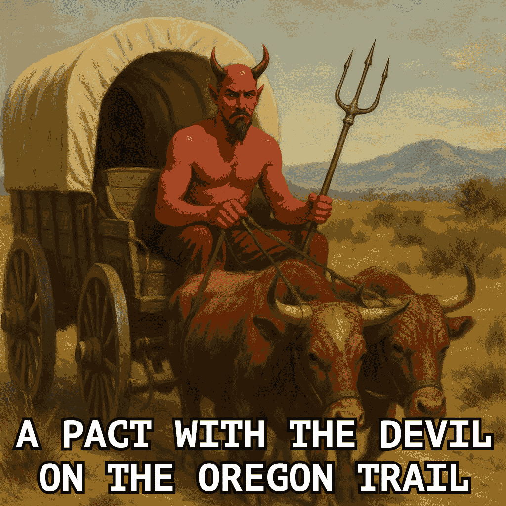
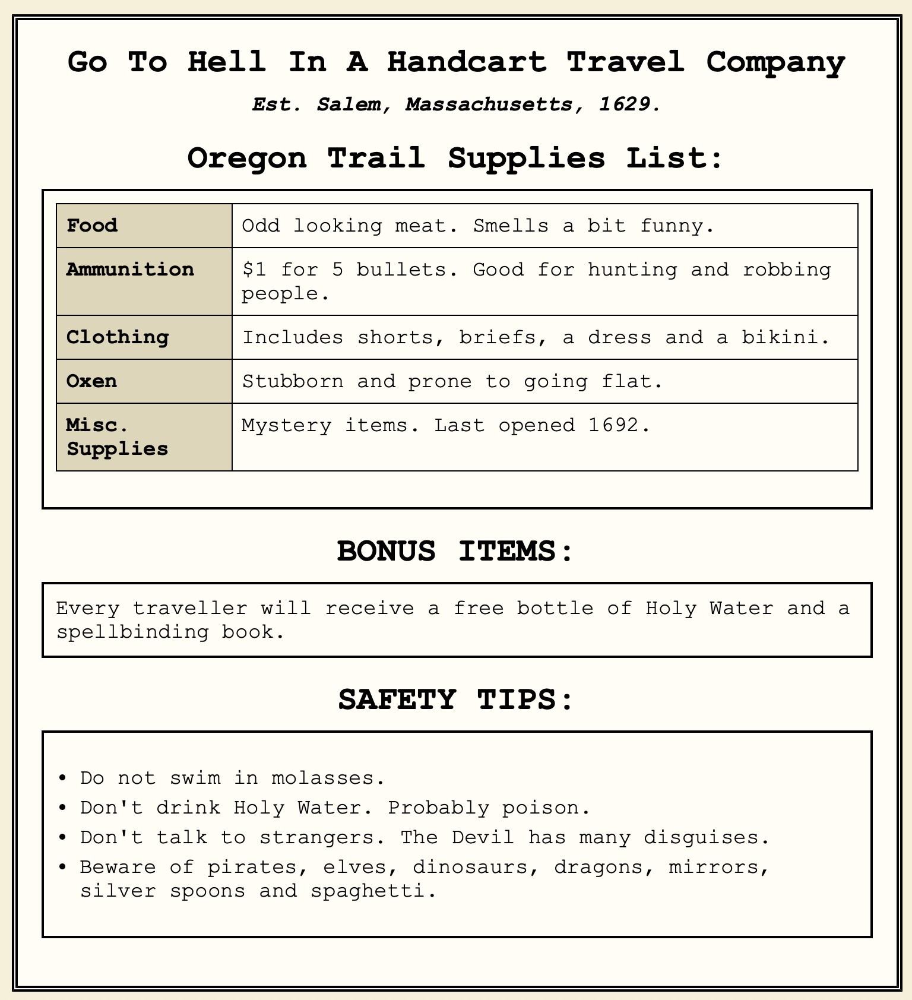
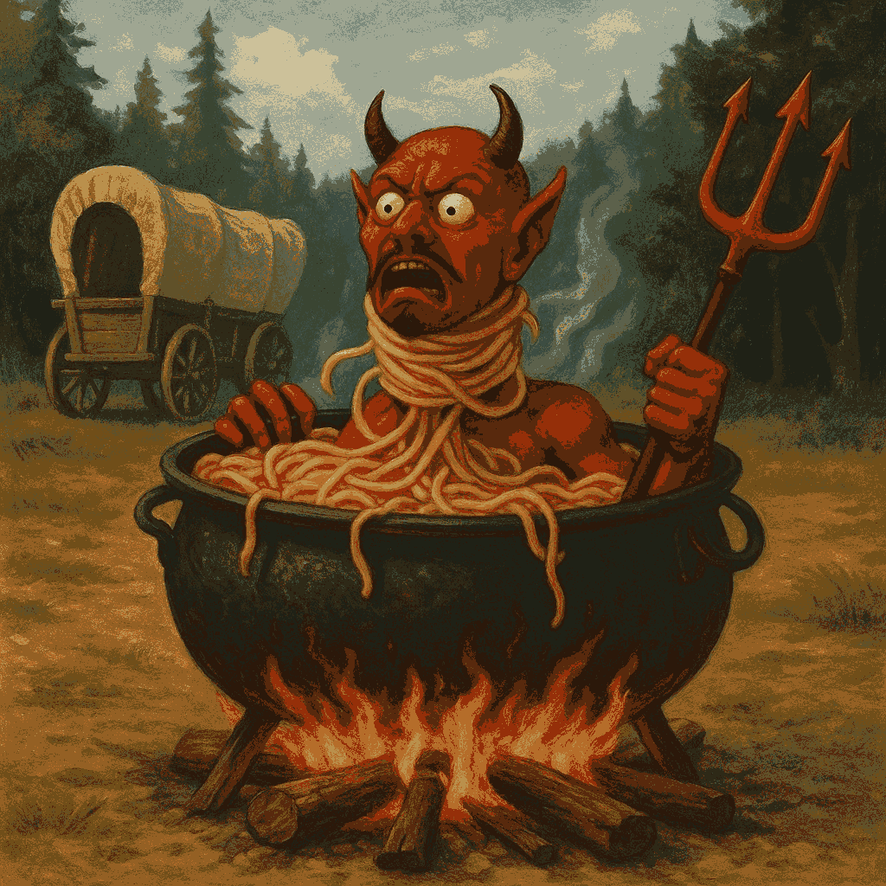

Author:
- Name: Cody Boone Ferguson
Location: US - United States of America (United States)
Award presentation:
Watch the Our Favorite Universe YouTube show for this entry:
To build:
make allTo use:
./progTry:
./try.shAlternate code:
The author provided two alt versions: one submitted with more events, though not
many more, along with a few other functional differences, and after winning, the
prog.c was made the prog.alt2.c code and the prog.c was made the complete
version (152 gotos up from 134) that was not made prog.c during submission for
practical reasons.
Alternate build:
make altAlternate use:
./prog.alt
./prog.alt 55 # 55 = number of turns, default 21
./prog.alt 42 6666 # 42 = number of turns (default 21), 6666 = hp (default 666)
./prog.alt2 # submitted code with bug fixJudges’ remarks:
You will have to go to “Fun-Damentals” to understand the logic flow of this
game. While the code might goto as many as 152 times to travel from main() to
a successful exit(666) you may have a devil of a time trying to figure out how
this program actually does what it does as it jumps hundreds if not thousands of
times.
Before you set off on your adventure to decode this program’s logic, make sure you have enough food, ammo, clothes, oxen, and programming supplies. You’ll be driving for 2170 miles through a wild wilderness inspired by Oregon Trail, so you’ll need to be prepared for anything! Regardless of how well prepared you are, you will have a devil of a time jumping around inside this C code. :-)
Author’s remarks:
Fun fact: after winning this, the author played the game in gdb from start to finish and not counting macros but counting all function calls (not libc functions just the few functions in prog.c), there were a total of 1416 (!) line jumps. Skipping prog.c function calls and it was still 1131 jumps! The prog.c, if you remove
#includes, blank lines, lines with just a brace and lines that have only variables, only has 55 (!) lines of code. A very tiny fraction of the time a line might be repeated in a row ONCE but that does not really matter, as it is still technically a jump.
SUGGESTION: if you dare, try opening
prog.gotos.c in an editor with
syntax highlighting and then highlight goto. Alternatively, try it with grep
if your grep has colours enabled (probably easier). This is a nice one to try:
grep -E 'heaven|goto|666|hell' prog.gotos.cAlternatively, in vim you might try, making sure you’re in command mode first (hit ESC if you don’t know - if that doesn’t work try hitting it again as it can depend on what you’re doing):
/heaven\|goto\|666\|hellRead it and weep scream (or curse :-) )!
NOTE: I actually submitted two versions, one encrypted (even emojis); any
document mentioning encryption is left for personal reasons out of
laziness and exhaustion from working on improving the presentation even after it
won. I have a copy of the code and data files
here (more details on it
can be found here or else in the
markdown files in the tarball), if anyone is interested, assuming there’s not an
extended power cut or something else goes wrong.
A Pact With the Devil On the Oregon Trail (…and his 134 152 regrets of goto)
The Go To Hell In A Handcart Travel Company PROUDLY welcomes all sinners to our GREATEST destination yet, with:

Here is our very sincere travel guide:

But before I help any sinners embark on this once in a lifetime journey, some travellers might wish to look at the commentary on the jokes (and possibly the disclaimer) as well as the humour section, historical references and cultural references as well. The commentary is primarily for those who might be uncomfortable with the jokes that go with the theme. Probably totally unnecessary, especially given the Best abuse of the user IOCCC entry from 2000 that directly insults the player but just in case…
Now, back to the good stuff (not that the jokes are not a good part of it)!
This program is an ABSOLUTELY ABSURD PARODY of the classic Oregon Trail, although it’s actually something else entirely now, hence the name change (not ‘Oregon Trail: …’).
Very early on (this took me two months to create) I was making this a C version of the BASIC game from 1978 that was published in the July-August 1978 issue of Creative Computing (see https://raw.githubusercontent.com/clintmoyer/oregon-trail/master/OREGON.bas) but that was FAR TOO BORING for the IOCCC - and for me, although part of that was thought up after I ran into the size restrictions (this was good because I came up with some really clever ways to save bytes, hide data and other things).
I decided to make it far funnier, far less educational and much more fun (at least to some people, myself included). On the note of ‘far less educational’: the original game did get some things wrong and I have made corrections that I talk about in in differences that I’m strangely including (because despite the fact it’s mostly a different game entirely, there are a couple remnants remaining). It’s a section that probably could be scrapped but I wrote it early on as well.
Anyway, that this is funny, far less educational and more fun makes it unique which is better for the IOCCC. Besides, how many times can you redo Oregon Trail? Actually a lot, given the very original was 1971, a BASIC one in 1978 (not sure what it was in the 1971, maybe also BASIC?) and the most recent one seems to be from 2021, but who wants another one here, even if I had the rights to do it (which I obviously do not, and that is directly against the rules)?
So there is little faithfulness to the original game and there is not meant to
be. Even so I MUST confess a TERRIBLE (!!) SIN 👿🔥 to the C gods: there
still remains a bit of faithfulness to the 1978 game, and in the MOST
ATROCIOUS WAY: it has an OBSCENE AMOUNT of gotos, in fact FAR MORE
THAN THE ORIGINAL 1978 GAME, which has ONLY 109! Actually, as you’ll see I
beat that number, even before the cpp. I know. I KNOW I’M GOING TO HELL. But so
does the PC (player character).
The game already went to Hell in a handcart at line 22, taking my belongings with it, as I will be needing them. Hopefully it took your belongings too, should you play this, as you’ll be needing your belongings as well. Not having the right supplies can end your life on the trail, although so can dysentery, injuries, dragons, Tyrannosauruses … Yes dragons and Tyrannosauruses still existed on the Oregon Trail back in the 1800s.
Even if you think otherwise, this game will show you the truth. Oh and yes. The Earth is flat, the Devil is real and the Sun is crazy … No. I don’t really believe that but they are cultural references - as well as some baffling beliefs by real people - that are in some of the jokes.
But I took it way further. As you’ll see, it is horrific spaghetti code and I
have personally never seen anything close to it. But that’s only one of the many
things I have done - and some are really quite unique and cool, or at least I
think they are unique (I have never seen these things before nor have I even
seen any suggestion of them before, one because it’s absolutely contrary to how
it works in C, namely near 200 NUL terminated char *s in a single flat char * - no, not an array of char *[] and not a char **!).
See obfuscation.html and my concluding
remarks for
more details on just how many gotos I have but beware of monsters. But be careful
if you have a heart condition. And if you’re a computer scientist make sure
you’re not at risk of stroke. The obfuscation.html file has
a litmus test I devised to make sure everything is
working right, although you have to know the program code well in order to
really be sure of it, especially as there are some things that seem like flow
control errors but are intentional.
The obfuscation.html file discusses those other cool things as well of course, and they might be briefly brought up in my concluding remarks as well.
Anyway: most of the strings in my data files (files, see below) have at
least one joke but I’d guess the vast majority have several jokes and right on
theme. The data file, the code and even the file size - as in wc -c - are all
VERY THEMATIC. Even the code has jokes. The data files have jokes that are
not part of the game but might amuse some people, should they wish to look at
them (there are several files they could do this with - I discuss these in
obfuscation.html I think.
There are a lot of fun twists as you might expect with the name ‘A Pact With the Devil On the Oregon Trail’. I will include example jokes as well as a commentary on the jokes in general, further down, although it’s only a tiny sample.
Oh and I even have emojis in mine - though I have an ASCII data file for systems
that do not display emojis (or some of the emojis that I chose for that matter).
That (portability) is one of the reasons for the data files and the DATA
macro.
Another reason is even the original strings (and some of mine are much longer, especially with emojis (but quite a few are longer even without emojis) as they’re multibyte characters), by themselves go way beyond the size limits, leaving no space for the code.
Another reason is it allows for obfuscation (data hiding part of it but not only that).
There are other reasons besides that that I discuss in data file
versions. But since many other past winning entries read from files,
including fairly large files, and since I have to have code that reads in the
data file (and don’t use #include - though as a matter of fact that would not
even work for the portability!), this is perfectly legal with rule 2 as only
doing it by #include to trick iocccsize is illegal (and again that would not
even work).
So the data files allow for portability and obfuscation (and showing some rather cool things that you can do in C - whether or not they’re a good idea in production code, they’re still quite cool and could inspire people, maybe). Plus allowing this to be a submission at all. As I discuss this and the other reasons later (including portability and compiling) as well as obfuscation - with some REALLY cool and VERY interesting tricks - in obfuscation.html, I will try and not repeat this justification, but I still will talk about the files in various places for various other reasons.
One thing I’ll say now but discuss much more in the obfuscation file is that there is
a SINGLE flat char * that holds almost 200 char * (though many are not
used for various reasons). Yes that’s right. Not an array of char * (as in
char *y[]) but a single char * - though it’s used and looks like it IS an
array anyway.
Going back to this submission. Why not have a bit (or a lot as the case turned out to be) of fun and livelihood for the IOCCC? In this game the player character (PC) had an ambiguously (most of the jokes are ambiguous like many great stories) sinful night, wasting thousands, dropping them from $6666 to $1666 (after buying a wagon train), leaving them with an ominous appearing amount. They actually ‘signed the Devil’s book’ (hence the name), despite the fact those who claimed such things (like Samuel Parris and who actually makes a presence - it’s very anachronistic and full of satire) exist never produced it as ‘evidence’.
The game is FULL of often RIDICULOUS jokes and also a fair amount of them reference CULTURAL and/or HISTORICAL events, even some that are IMPOSSIBLE. This includes some that are historical and/or in culture, and that sometimes includes things that happened but could not be possible on the trail but actually happened in real life anyway.
A great example is instead of bandits attacking the…Queen Anne’s Revenge is on the Oregon Trail - over a century after she went to her watery grave (on 10 June 1718 near North Carolina)! But in fact that event involves playful mockery and also references to Blackbeard’s purported last words (‘Well done, lad!’) as well as his supposedly saying that only he and the devil know where his treasure is, which goes well with his lore if what is said about his beard is true1 - and the theme of the game of course.
But there are other historical and cultural references too, one that is a legend (think of a certain crossroads - and yes they had crossroads on the Trail but even if they didn’t…), some references to the Miracle Workers sitcom series (the Dark Ages, year two, and The Oregon Trail - obviously - which was year three) and then rather fantastical things as well. It plays in on old beliefs about dragons existing and dinosaurs existing too (okay so those did exist but if they did exist on the Oregon Trail they obviously would only be fossils - in this game though they actually are alive).
Funny thought: how do we know dragons don’t exist when we constantly discover new species? And how do we know dinosaurs do not still exist when other species thought to be extinct for millions of years were actually found, such as the first (of others since this) discovery of the coelacanth in 1938? No. I’m not serious about the first parts though the coelacanth is in fact real.
Yes there are some Jurassic Park references (‘spared no expense’, and maybe something such as the T-rex as well). Of course I already mentioned that dragons and dinosaurs still existed on the Oregon Trail, or my Oregon Trail, but there is much more to discover. It’s really a lot of fun and very funny, although the latter also depends on your sense of humour (all those I have shown think it’s hilarious though).
And as the character you play is on the darker side there are darker jokes as well, though not all are. The player character (PC) is also of dubious character and makes ridiculous decisions like when the riders (who are always friendly) come up. That also involves some jokes which you’ll see; I’ll mention some of these above jokes and maybe others later on in this file.
As for the riders: as I said they’re always friendly and instead of having tactics (no need), to be on theme, you rob (or attempt to rob!) them. The joke before it happens is one thing but if it succeeds it’s even more ludicrous (and funny - and also perhaps sardonic).
And if you do succeed you get some things too but not all of what you might expect! It might be called a kind of damaging (some might say ‘damning’) event but it fits the theme quite well and although it (and this is not the only case this happens in the game) might not be something most people care to think about (but see what the judges LIKE, yes cannibalism does in fact occur in the game, to be blunt (not that the judges like THAT but you’ll see what I mean if you read that section: which is by no means necessary for most people!). Of course it’s happened throughout history including on the trail so even if the judges did not like to throw up (and laugh, which I would guess they will also be doing), it still fits well.
There are actually far more ridiculous examples of this, things that make no sense, like most of the game. But that’s what makes it so much fun. There are many other absolutely ridiculous things, and the above is only a small sample of this.
Besides the theme and jokes in the code: it also spells out OREGON TRAIL
(actually more than that but I’ll get to that later).
There is so MUCH MORE to discover, some of which is in this file. In fact,
besides the bonkers spaghetti code (many more gotos than the 1978 BASIC has,
once pre-processed, and seven more before), very little remnants of the original
game are extant.
As noted, depending on your sense of humour you will find this absolutely HILARIOUS (those I have shown do find it hilarious) or perhaps a bit unsettling but it’s all in good fun. As noted, emojis are used as well (see further below for more details).
I REALLY POURED MY HEART and (proverbial) soul into this one …because the player character (PC) obviously doesn’t have one to pour. I don’t know if I have ever put the amount of effort into another program or any project (even the many games I have created) that I did in this one and I definitely have not in such a short period of time (about two months, which is relatively short given all it has).
I also poured a huge pot of spaghetti over it, so much so that it endangers the life of the PC. I hope you’ll forgive me for my sinning (and crime against C).
I had to. This is true satirical programming just by that alone, and it is a
public service to let people know just how dangerous it is and just how much is
lost with poor style (and goto is exactly that).
Nonetheless, I hope you appreciate the jokes and the fact that I really put a lot of effort into making this fun but in some ways disturbing or dubious (even if ambiguous and vague and cryptic, the latter exactly like the data files!), right on theme of the game. The jokes are deliberately vague and ambiguous so that YOUR mind can interpret them the way YOU want (as above - like good stories).
As you’ll see, although ambiguous and vague in most cases, there is room left
for personal interpretations, so that more people can enjoy it. If nothing else
I think the tricks I have in the code, as well as the mad amount of gotos,
will entertain people, perhaps just as much as the game - or close to. Of
course…the amount of gotos might horrify people too. But I guess we’ll see.
Actually the only things that remain of the original Oregon Trail: you travel the same route (longer than the original game as they got that wrong) and a few simple game mechanics. This is largely due to the jokes in the game but those jokes also involve MANY code changes.
Even the game mechanics that stayed were modified in some way or another (there might be an exception or two in some way, but not fully that I am aware of). Some mechanics were actually removed. Dead code is not only on theme but also leads to more obfuscation - and jokes. Always jokes. That was a big part of this.
Note the (in?)famous ‘you have died of dysentery’. The 1978 Oregon Trail did not have it (it had pneumonia instead). OBVIOUSLY I had to change it.
But the way I have done it is far more fun and amusing. Emojis actually allow for a lot more fun and visuals without trying to outmatch such an iconic game. Even if it’s a basically a different game now. Actually I would argue emojis are even better here.
The jokes that have what some people might question actually have multiple interpretations and if one goes to what they find ‘questionable’ that’s actually on their end and very possibly (in many cases this is almost certainly the case) not even my original idea. But that’s discussed in the commentary on the jokes.
For those who are curious enough but do not want to try and figure it out: I do offer a section of some of the differences from the May 1978 issue of Creative Computing (though as it’s mostly a different game it probably doesn’t matter - I wrote it before I changed it to a new game). Originally I included the BASIC code with some typo fixes but I wanted more room for other files like the images you saw above.
Yes the (my) game can be beaten although as you’ll find out it’s not exactly as
you expect when you do (or for that matter, don’t :) ) but yes it can be a bit
harder (well okay I don’t know - been too long since I played the original),
especially as there are a number of unusual hazards (all with a joke or two or
three or even more than three). One thing that will help make it easier if you
feel it’s too hard is to get rid of the code (and any other place where the b
is reduced):
b-=10;The b is hp (hit points) and stamina (both - and yes I’m aware that they’re
often separate and some games have stamina change how much hp you have and of
course some games have only one or neither: like the original Oregon Trail which
had no such concept, though perhaps it is indirectly depending on how you look
at it).
But on the other hand (as far as ease) you do have more money so there’s that (this is also part of the theme btw). There are different strategies required due to different mechanics of the game: and it’s quite a few though some of the logic is similar, particularly with checks, though only somewhat similar. Even checking if you overspent is done differently when you dig deeper into it, even if it might at first glance seem to be the same, or so I think.
BTW: the alt code, prog.alt.c, is what I call the ‘Devil’s Cut’: it has additional events that I could not fit into the main thing and maintain the obfuscation levels. Of course I added a fair amount more of obfuscation later on and I did not add that to the alt code. There are probably too many events as it is (23 not counting the things that happen in the mountains - and some fun additions that are related to some events). But the extra jokes in the alt code was worth it.
The alt code has a lot less obfuscation btw so it might be somewhat easier to follow, even if probably not that easy.
It also would appear that I did not merge the variables I and E into just
E like I did in prog.c. As well, it might be in the Blackbeard event (not
sure) you will in some (if not all) cases lose bullets despite the fact messages
do not refer to that. That changed later on and I did not have the time to
address it. The fact the messages don’t refer to them is enough.
The commented.c code is also not entirely as complete and might even have some bugs that were fixed (it is unclear if the same applies to the alt code although I think I got those fixed).
Actually, you get to see progression more, comparing the alt code with the submission code, and you can appreciate much more this way.
Anyway, I made a huge amount of effort to repeatedly reduce bytes for more events and more obfuscation but if it was not for the size limit increase (or decrease depending on how you think of it) AND the data file this would never have been possible as even the original strings far exceed both rule 2 limits (certainly not possible with obfuscation, maybe not otherwise)!
See my somewhat unserious dedications as well, if you’re bored and easily amused.
Disclaimer
PUBLIC HEALTH ADVISORY: as everyone who already knows me, and as new people will have noticed already: I write a lot. So IF you believe that all I have written is circumlocution, and you have circumlocutophobia aka logoblabberophobia (fear of circumlocution - yes those are made up), and you also have hippopotomonstrosesquipedalobibliophobia (fear of reading long books, and yes I made that up too, based on hippopotomonstrosesquipedaliophobia - which is a humorous extension of sesquipedalophobia for fear of long words - and bibliophobia), you might also have hippopotomonstrosesquipedaliophobia, a fear of long words. Don’t worry though, dear sinner! There are treatment options. See the following link, and sorry in advance (even though it’s way too late :-) ): https://www.verywellmind.com/hippopotomonstrosesquipedaliophobia-2671752. Incidentally, writing less takes more time and I have chronophobia (okay so that’s a lie but I don’t have much time left).
Anyway: as the name ‘A Pact With the Devil On the Oregon Trail’ implies this is not really Oregon Trail; and I took it beyond a parody - it’s taken a life of its own hence not ‘Oregon Trail: A Pact With the Devil’.
There are A LOT of jokes and unexpected events; it’s not even just about immorality/sinning, though let’s face it: what people call immorality/sinning was certainly on the trail, even things I shied away from, as much as I thought it would enhance the game, exactly because I thought it might be too much for some audiences (and that might seem strange, given that there are things that are deeply taboo but happens in extreme situations, in order to survive) - I tried my best here and I think I did pretty good, and others I shared this with agreed there.
The jokes are DELIBERATELY VAGUE AND AMBIGUOUS so that one can interpret and enjoy it their OWN way, and thus I can avoid the problem: if someone imagines something a certain way (dirty, for instance? I’ll return to that one) it is on their mind, not mine. There might be a few that are less ambiguous in one’s mind but even so they might be interpreted different ways.
An example is the ‘Devil’s bedchamber’ - but this also fits the theme; you have to see the messages in the right order (which might or might not happen) in order to understand this. Well there are a few others but they also have many possible meanings; I discuss that in Jokes subsection of Humour. The jokes are not directed at the user but as the Jokes section and other parts of this file point out that has happened in a previous winning entry, as a reminder.
Even so, nothing is absolutely implied here, even if one or two might seem otherwise. There is a chance in some cases (I spent a lot of time on this and it was exhausting - worth it though) I did not even think of every possible meaning. Besides, the narrator is often making up a lot of rubbish and that joke includes a lot of nonsense (the whole thing is in fact nonsensical fun).
The narrator is, as I’ll get to later in the commentary on the jokes, actually the Devil, giving a running commentary on what the PC is doing (i.e. what is going on in the game).
I tried REALLY HARD to remain classy but still have the jokes and irony (satire included), though with the visuals that can kind of blur some of the class. Some are dark. And an example where there is a blur, but which HAD to be included, is dysentery, an iconic part of later versions of the original Oregon Trail and even society (not to mention the real Oregon Trail). Given what kind of disease and the symptoms, it can’t be done otherwise.
Besides, it’s a lot better than how it is in real life, whatever that is.
I think I did pretty good, especially since it’s directed at the player character (PC), not the player, exactly like all games should do (when they have a narrator).
Anyway: if the idea of a pact with the devil (or in this case, the narrator! :-) :-) ) does offend you, and I suppose that’s the real one for some people, I can offer only: it’s nothing serious and all in good fun; there are a lot of jokes and in fact the PLAYER CHARACTER (PC) is playfully MOCKED by the narrator EXACTLY FOR this pact and their behaviour! Of course as the narrator is the devil that means the devil is mocking the PC for making a pact with the devil, which makes it even more ridiculous. As you’ll notice the narrator also has a somewhat dubious character (which is also how it would go in real life, at least if it existed, given what the narrator is) but also in vague and ambiguous ways.
That is also discussed later in the humour subsection. As I note elsewhere I think, I have a personal problem with labelling people a sinner and I cannot even name all of the sins which adds to the lack of seriousness - and adding to the fun.
And yes the fact the narrator is the Devil and the narrator talks about being in Hell, knowing the Devil, meeting the Devil for the first time etc., is all very well intended, to increase the irony and ridiculousness. That was obviously one of the goals (which I succeeded with remarkably), kind of like the pot of spaghetti that is so big it could feed a family of 500 giants. I’ll return to this.
As noted earlier, and probably mentioned later, the game does raise some things that society might like to ignore of what happened on the trail (an example on another route is the Donner Party) but with jokes, irony and satire, rather than writing a book about those things (probably in uncomfortable ways for many people). Plus it’s all done in a heartbeat (well maybe not just one :-) ), assuming of course that the PC even has a heart at all! :-)
Besides those already noted, there a fair number of other historical references that you might not expect but are related to the theme.
On the subject of the uncomfortable cannibalism, see the vomitory section for another reason to actually INCLUDE it (thankfully the judges like programs that make them throw up! :-) ), to say nothing of the ample opportunities for a lot of different kinds of jokes and realism (and simultaneously also being utterly ridiculous).
Finally: PLEASE DO NOT take anything personally; when the narrator says ‘you’ deserve this and that this is not about the player but the player CHARACTER (PC) they are playing, exactly like the Devil would do. Yes I realise this statement is probably not necessary but I like to point such things out.
Personally I have taken some screenshots of the game though I am very easily amused. I think they’re definitely worth having in the game and if I played a game like this I would want to take screenshots, as I have done. I like the blend of graphics and text, but in a way I have never seen before (emojis), though I am sure some games do it. It’s a nice balance.
I’ll discuss in the Data files section more of why I provide the different data files but part of it is it allows different people to enjoy the jokes in different ways.
Humour: general comments on the ambiguity of the jokes
As previously noted the narrator is the Devil. It is unclear if the Devil is physically there or just a voice in the PC’s head. It certainly is not the PC’s conscious - he clearly has none, though not because he made a pact with the Devil.
This transcends auditory hallucinations, even if the PC is losing his grip on reality. Nonetheless that very subject deeply affects me, holding someone who suffers from this very dear.
Usually I refer to the Devil as a male but there are some cases where I use female. This is part of a joke. The reason is that the author is male and nothing more. If you wish to imagine the PC (who is also male) or the Devil as female feel free, even if you wish it to be someone else entirely: perhaps someone who should have their head examined, or maybe someone who is being asphyxiated by spaghetti? :-)
Anyway: this is not making fun of the tragedy of hallucinations (which typically occur with delusions, which the PC is clearly having, although see below). As noted, someone very very dear to me has to go through this and I’ve known others too.
It could be a visual hallucination too, which often happen at the same time. It is entirely unclear if the PC knows any of this, however, as he definitely has almost lost all grip on reality.
Anyway, one thing that does happen is a running commentary, often mocking if not being outright cruel and totally unhinged (all of these do in fact happen), exactly like the PC and the Devil in his head.
This is a DEEPLY PERSONAL thing but I tried to make it fun and as it’s bogus enough it’s obviously complete nonsense, just as many jokes are, yet it’s also all too real. In truth it’s a terrifying thing and I wish more people understood this. It’s a game though. It’s meant to be fun.
Oh and no. The ambiguity of the jokes does NOT imply anything about the PC, in what would be deeply taboo ways (okay, there’s the cannibalism but that’s another matter entirely and consistent with human history). But as far as the PC is concerned it is someone else, a real person, and the narrator acts that way too: which is precisely consistent with hallucination. Yes that means he MIGHT not be aware it’s the Devil, even though he probably should recognise him, having signed his book.
But obviously nobody else could be the narrator. No else would be there with the unhinged PC, even if a large part of why they are unhinged is because of the Devil narrator themselves. In any case, this is the only thing that would fit into the narrative, and it’s perfect too as you can easily imagine this happening, at least if such things as a pact with the Devil were real, and if this game were based on reality (quite the contrary as you see by now).
That it’s the Devil’s voice makes some of the jokes even more absurd, ironic and in some ways more believable, though with the nature of the jokes that’s going to be hard to see. It makes some of the jokes funnier though, like those that refer to the PC going to the Devil and even the Devil’s bedchamber (which is more like torture chamber), amongst some even more ridiculous ones.
Now, with that out of the way, some comments on the jokes might be in order. As you might have noticed already some of the jokes are darkish (if not outright dark) and others CAN be interpreted in dirty ways but also other ways. But in general the jokes are deliberately ambiguous for this very reason.
And I might remind everyone that these jokes are not directed at the player but the player character (PC) whereas a previous winning entry (‘Best abuse of the user’) directly insults the user with things like:
you are a thieving bucket of whores
you are a scum-encrusted bucket of whores
you are a glorified colon of miasma
you are a satanic carton of poxes
…and many others, many of which are very funny (I won’t spoil any more). As can be seen some of those are what people would call dirty and offensive, and one refers to colons (dysentery, perhaps?).
My jokes are on theme with the game but also are ambiguous and vaguely defined and only directed at the PC (and sometimes the narrator, yes even though the narrator would only be mocking the PC, he is playing games, just like this happening in real life, although a voice would not be mocking themselves - it’s not real, it’s a game, and it’s not meant to be a true story). The fact the game is on theme throughout is obviously why I chose to show the last insult above.
Well okay some of the jokes here might be a bit more direct but even those could be interpreted in different ways, and some of those actually have more than one part (they all probably do) which makes what might be (in some people’s minds) direct less direct (puns can also help here).
I am not sure why I am continuing this, as I know a lot of computer programmers have similar kinds of thoughts. But anyway, IF you do have a dirty mind (which is a TERRIBLE thing to waste, btw) there are many jokes that likely will be interpreted that way BY YOU. To which say go for it! There is absolutely nothing wrong with that.
As you might guess I too have a dirty mind but the ambiguity and vagueness makes it all the funnier and absurd (though perhaps not as absurd as what I did with the code?); it also allows different types of senses of humour/minds to interpret it their own ways as well as make one wonder.
Some that might be called ‘dirty’ also have a more literal meaning (which often enough is how it started) as another possibility and I was careful how I worded the jokes for this very reason. Often literal meanings actually can be dirty to some (in real life), but often times not, and some people (like me) might see them as more than one thing at the same time, regardless of what they really are (or might be).
In fact some of the jokes that can have a dirty (or otherwise ‘unclean’) interpretation, were chosen out of character (OOC) of me i.e. it was not what first crossed my mind. The drinking unpotable water, which has several possible interpretations, as you’ll see, was not originally this way as it progressed in stages as I developed the game.
Anyway this allows everyone to use their OWN imagination: this is something a lot of good games do too after all, and it fits stories also. If you ask a lot of people to interpret novels you’re going to invariably find a lot of interpretations, often in dramatically different ways, sometimes dirty even when it’s definitely not. That’s exactly what I am doing here too, and that’s what a good storyteller does. And indeed there is a story here (there is a plot, several plot twists and even the end is quite unexpected), even if it might not seem like it (it also depends on the pRNG).
Regardless, many of the that jokes could trigger dirty thoughts do have A LOT of alternative meanings, as noted: words are EXTREMELY POWERFUL and so is the human brain and imagination. The truth is humans fill in gaps of what THEY are most familiar with and previous things that happened in THEIR life as well as what they WANT it to mean (we all hear and see what we want to hear and see and we only believe what we hear and see etc.).
The human mind fills in blanks with patterns if it has to, which for whatever reason it seems to have to when there are gaps. We might somehow call it a pattern matching that’s not related to computer programming.
But IF you go for a dirty interpretation that is on you, not me, and frankly that’s fine. They are there to enjoy HOWEVER YOU WISH! Frankly if you DO go this way it is right on theme of the character anyway which makes it more fun! And one might remember that the player character (PC) is losing their mind on the trail and having signed the Devil’s book so they’re clearly in this mindset.
The narrator is extremely dubious, for reasons I already noted, and there is some projection, despite not being real, which makes it even more ridiculous, which is part of all the jokes.
As you might have noticed many of the jokes actually MOCK THE PLAYER CHARACTER (PC) exactly for his sins/misdeeds (as noted in the Disclaimer), despite the fact the narrator is just as bad (in many ways worse). Yes. The narrator, the Devil, is a hypocrite: did you expect something else in this game?
I personally do not believe in the idea of making a pact with the devil (as in I don’t believe in him/her/it let alone signing a book that doesn’t even exist) and I think the idea of calling someone a sinner in this context is problematic and highly subjective, though I do not have any problem with people who find comfort in not sinning themselves. We all need to find solace in our own way.
That is why it started out with the narrator mocking the player character (PC) for his (in truth) often very poor and reckless choices (i.e. it’s satire). But at the same time there are jokes that might make some people question the morality of the narrator, which is funny because it’s the Devil. And yes, the narrator still has a different personality (than the PC). That’s how it goes, and it fits in with the game very well.
But an example is the seeming obsession (or is it?) with the daughters. These jokes however suggest that the PC is thinking these things but it also allows the players to wonder. The PC would probably be beyond wondering and probably accusing, especially given what is said and WHOSE daughters (in some anyway). The fact it’s even brought up is often a sign of something that is being denied. Again there is some projection, gaslighting and plausible deniability, all of which is utterly absurd, even if it was a real person.
Here’s one:
🐂🐂🐂🐂🐂🐂🐂🐂🐂🐂🐂🐂🐂🐂🐂🐂🐂🐂🐂🐂🐂🐂
🐂 An ox looks at you funny so you eat 🐂
🐂 him! 🐂
🐂 🐂
🐂 You're a sick, sick individual. You do 🐂
🐂 know that, right? FIRST you BURDEN HIM 🐂
🐂 WITH ALL YOUR RUBBISH and THEN YOU EAT 🐂
🐂 HIM BECAUSE OF A FUNNY LOOK? And YOU 🐂
🐂 DIDN'T EVEN SHARE HIM WITH YOUR FAMILY!🐂
🐂 🐂
🐂 What next, will you eat your daughter 🐂
🐂 too? No! NO! NO NO NO NO! I SHOULD NOT 🐂
🐂 HAVE SAID THAT! NO! DON'T EVEN THINK 🐂
🐂 ABOUT TOUCHING HER! BACK OFF!! 🐂
🐂 🐂
🐂 SHE'S MINE!!! 🐂
🐂🐂🐂🐂🐂🐂🐂🐂🐂🐂🐂🐂🐂🐂🐂🐂🐂🐂🐂🐂🐂🐂What does that even mean? It is probably sanctimonious hypocrisy whatever it means but there are many different meanings including even cannibalism like the player character (PC) is being accused of himself/herself/themselves. That possibility was VERY intentional. And yet: how could a thing that does not exist even have any person or thing at all?
Another one that might be even worse but still ambiguous and accusatory in a sanctimoniously hypocritical way:
💋❌💰💋❌💰💋❌💰💋❌💰💋❌💰💋❌💰💋❌💰💋❌💰💋❌💰❌💋
❌DON'T BE ABSURD! You don't have that kind of money. ❌
💰In fact, one of your daughters told me JUST LAST 💰
💋NIGHT that ONCE AGAIN you had a delightfully sinful 💋
❌night! NO! I KNOW WHAT YOU'RE THINKING! NOTHING ❌
💰HAPPENED BETWEEN US! STOP THAT RIGHT NOW, YOU 💰
💋FILTHY SINNER! 💋
❌ ❌
💰Hmm...although...now I think on it, I'm starting 💰
💋to wonder... OH HELL! NO NO NO! What if she seduced 💋
❌me and we DID DO something? That would be AWFUL, ❌
💰JUDGING YOU WHILE HAVING AN AFFAIR WITH ONE OF THE 💰
💋WOMEN! Still sure WE'D NEVER SIGN THE DEVIL'S BOOK! 💋
❌ ❌
💰Although...I don't really remember WHAT we did last 💰
💋night... ANYWAY, KEEP US OUT OF IT YOU MONSTER! 💋
❌ ❌
💰The book has a cost and money doesn't grow on trees. 💰
💋Perhaps it might grow on horns though? Ask the Devil 💋
❌for help. Assuming he helps MONSTERS. ❌
💰💋❌💰💋❌💰💋❌💰💋❌💰💋❌💰💋❌💰💋❌💰💋❌💰💋❌💰💋That’s one that makes the player think the narrator is losing his mind (but of course mind is subjective here) and is now starting to wonder if what he thinks is going on is really going on. Yes that is a ridiculous idea. That’s what often makes satire. Obviously this could not happen. That’s the point.
But he’s still trying to ridicule the player character (PC) for signing the Devil’s (HIS) book, all the while denying what ‘he’ might have ‘done’ (or ‘did’), only to then question it again. That is to mess with the PC’s head even more.
The question of ‘what she did’ is up to interpretation as it could also be the narrator who ‘did something “questionable”’ (that’s how I would interpret it - projection - but I deliberately worded it in a way that it could be something else entirely) and he’s trying to justify and deny his behaviour all the while criticising the PC, calling them a monster.
Of course in truth the narrator, not being a real person, is just saying all these things to mess with the PC’s head, so obviously even if there are daughters nothing is going on with them (though if one wishes to imagine otherwise for some reason, they certainly can).
The reason the narrator is so unhinged is because he’s playing games with the PC. Or maybe he already was. Who can tell? How can a being that doesn’t exist be unhinged though? Here’s one that is even more ridiculous:
🐂❌💋🐂❌💋🐂❌💋🐂❌💋🐂❌💋🐂❌💋🐂❌💋🐂❌💋🐂
❌You have run out of oxen and must walk. ❌
💋Better buy more... IF YOU DIDN'T WASTE MORE 💋
🐂MONEY ON MORE SINFUL NIGHTS, like your 🐂
❌red-headed daughters told me last night, ❌
💋assuming they weren't LYING to me. 💋
🐂 🐂
❌AND YES. A dirty mind IS a TERRIBLE thing to ❌
💋waste BUT NOTHING HAPPENED BETWEEN US!! We're 💋
🐂JUST FRIENDS and they've been telling me ALL 🐂
❌ABOUT YOUR RIDICULOUS BEHAVIOUR. OK, it MIGHT ❌
💋be in bed with them but they can't help 💋
🐂themselves...kind of like you. WHERE do you 🐂
❌think they got it from? Besides, IF YOU KNOW ❌
💋THE DEVIL in the biblical sense WHY SHOULDN'T 💋
🐂WE? We EXPRESS PASSION and YOU ARE JUST AN 🐂
❌EVIL MONSTER!!!!👹 Good luck hauling your ❌
💋wagon! WE'RE TAKING A PLANE!! 💋
🐂❌💋🐂❌💋🐂❌💋🐂❌💋🐂❌💋🐂❌💋🐂❌💋🐂❌💋🐂Even if there is that older humorous (which is part of why it’s there - and even more ironic given who the narrator is meant to be) phrase: it goes from accusation to denial to practically admission to justification (and explanation) to - a plane?
That’s obviously totally bogus. Even if the narrator was real he certainly could not be trusted. That was useful in some cases as code could be different.
And of course it’s all meant to mess with the player character’s (PC’s) mind (and in a way, by extension, the player’s head, but that’s how it goes with all games, even though the narration is about the characters in the game).
That they (the PC) do not really understand the narrator is not real, would mess with their head even more (although yes in some cases people can be aware hallucinations are not real, in this case the PC is not aware of it). But of course the devil is not real, despite what the jokes say.
Obviously the narrator is not going anywhere here and neither is anyone else, except of course that the PC is going to end up in hell, which means so is the narrator, in a sense anyway. Well actually they’re already there, aren’t they? :-)
Note it says ‘wagon’, not wagon train, but that itself is nonsense, as there were always wagon trains. But of course the idea of an aeroplane is what makes it really ludicrous - intentionally so. Even if the narrator was real, this would be over the top. The PC does not really know this though.
There are others that suggest the exact opposite of what is suggested here and some in between, which makes everything more balanced and suggests the narrator truly is unhinged and untrustworthy (and unbalanced), which of course he actually is.
Of course…the red-headed part: some people consider redheads unlucky (for some reason) and we might say that the character is indeed unlucky. Here’s one more on that theme:
🍔🍟🍔🍟🍔🍟🍔🍟🍔🍟🍔🍟🍔🍟🍔🍟🍔🍟🍔🍟🍔🍟🍔🍟🍔
🍟Uh oh. THERE'S ANOTHER ELF! You must be 🍟
🍔losing your mind my friend! ELVES DON'T 🍔
🍟EXIST, unless you ask a German. They can't 🍟
🍔even count to 11 without claiming there are 🍔
🍟elves! Neun, zehn, Elf ... I guess I might 🍟
🍔be losing my mind too! BETTER SHOOT THE ELF 🍔
🍟BEFORE IT TAKES YOUR DAUGHTERS AWAY AND EATS 🍟
🍔THEM! You might need them for food later on, 🍔
🍟you HORRIBLE, HORRIBLE MONSTER. They are 🍟
🍔heavenly women and are not for evil Devil 🍔
🍟worshippers to eat! NO. NOT FOR ME EITHER! 🍟
🍔Stop going there you sicko! They are NOT food 🍔
🍟and YOU CANNOT GO TO HEAVEN, YOU DEVIL 🍟
🍔WORSHIPPING MONSTER! Cut it out. NO! NOT THEM!🍔
🍟STOP WHAT YOU'RE DOING!!! 🍟
🍔🍟🍔🍟🍔🍟🍔🍟🍔🍟🍔🍟🍔🍟🍔🍟🍔🍟🍔🍟🍔🍟🍔🍟🍔…with more wordplay of course, this time with a bit of German (for the
uninitiated ‘elf’ is how you say 11 in German and the narrator was counting
‘nine, ten, eleven …’). And the reference to being heavenly women and ‘do not
go there’ (the thought about eating) and ‘you cannot go to heaven’ is a
reference, of course, to the player character (PC) having signed the Devil’s
book - and the PC always going to hell (which is also baked into the code with
goto hell;), which ironically means so is the narrator.
The narrator saying ‘not for me either’ has a number of interpretations and it’s probably not what you think (but I don’t want to say so you can interpret your own way). The caps stresses panic and haste. Of course…the Devil would, one would assume, take them if he really wanted to.
There are other examples that show a totally unhinged narrator who enjoys mocking and accusing the player character (PC) of being a horrible person all the while the narrator is - well you know who he is.
Data file versions
By versions I mean for different systems and purposes. The following programs compiled from prog.c/prog.alt.c exist:
prog- uses emoji data file (databuilt fromdata.src) with wider text (in some cases - it was hard to maintain three files and with emojis it can easily happen that strings are too big).prog.scrnshot- uses screenshot friendly emoji file. This makes it harder to follow all the jokes (compared to the other one), because of the game flow. The other version still has some of this but more of the strings are wider so it’s less of an issue, depending on monitor size of course. Usesdata.scrnshotbuilt fromdata.scrnshot.src. Oh and prompting for pressing return between every string is REALLY annoying and ruins the fun so that was obviously not a good choice for any mode.prog.asc- uses the ASCII only data filedata.asc(built fromdata.asc.src). For systems that don’t support any emojis or some or all of the emojis I have used (or if there is some sort of problem with formatting due to emojis on your system).prog.alt- uses same data file asprogbut is the prog.alt.c version - a few more events though I think with less obfuscation (does not mean it’s not obfuscated, though it is less obfuscated).prog.alt.scrnshot- likeprog.scrnshotbut is the alt code - a few more events.prog.alt.asc- likeprog.ascbut is the alt code - more events.
See below under emojis for more details on the ASCII/emojis issue as well, for the reasoning behind these different versions.
The extra file, the screenshot one, is more for personal amusement, but some
friends quite enjoyed those I shared too. I realise the data one does not
always have text wider but this could be good too; it was hard to find a nice
width and it depends on the screen as well. Actually the ones that are not as
wide tend to be those with emojis. Sometimes it was possible to make them wider
but not always, due to how the data file works, and how I can store close to
200 char *s in a single flat char * - which I discuss in
obfuscation.html).
In the scrollback section I do describe, though untested, how to have scrollback at the console, at least for linux.
I used vim and merged the lines for the ASCII only and default emoji one and set textwidth to some value, possibly 80, as I didn’t want to assume a wider screen, but still have it a fair bit longer than the screenshot friendly one. As noted this was harder with some of the strings that include the emojis due to the fact that emojis take multiple bytes. I did observe late in the game that some messages are wider than 80 (I fixed those) so some might be a bit longer. It is dangerous to make too many edits.
If one uses the addpadding tool correctly (which I describe later and also in
the obfuscation file) they can make their own strings providing that the strings
are not too long and are designed correctly.
Actually see the next section on making your own theme…if nothing else for a simpler explanation of how they work (the obfuscation file discusses it in much more detail).
Making your own data files
I alluded to the fact that you could make your own theme, though this might
prove hard to find a theme with matching code, unless you reimagine some of it
to make it valid (kind of like I have done with a lot of it). Perhaps
Middle-earth? Or perhaps an actual Oregon Trail without the pact (but of course
how do you justify the amount of money, the goto hell;, the cost of the doctor
etc.?)? Or maybe real life (whatever that is :-) ) outside the trail? :-) Or you
could try and modify the code. If you dare.
Anyway this might be a simple way to understand the data file - though
obfuscation.html explains more. If you were to do this you would
have to edit the source files and use the addpadding.c tool that I describe in
obfuscation.html - though the Makefile should help there.
Make SURE you’re editing the SOURCE data file(s)! Don’t get rid of the NUL bytes or the BEL bytes! And don’t get rid of the ‘%’ in strings either. MAKE SURE those bytes (the BEL byte and the ‘%’ - when it starts with one) are the first byte in the string. If the ‘%’ is in the string elsewhere then obviously keep it where it (or they) are. There are multiple reasons for it being the first character - all by careful design.
Remember that if the code (prog.c/prog.alt.c) refers to a bad location it can crash or do something unexpected! This also happens (see below) if a string is too long (it will show strings wrong at the best case). That’s why I wrote all those extra tools and carefully designed it all. These are described in obfuscation.html.
Other points:
- KEEP THE ORDER THE SAME! Do NOT add strings in between others! Just edit strings that are appropriate for the code in the game (see next part).
- Edit the APPROPRIATE STRINGS so that the code will do the right actions. You can start out by looking at strings.loc.txt so you can compare in code. Then you can find that string in the source data files and edit it to your liking. Of course this depends on if you can figure out the code (you might find deobfuscation.html of some use too, although the obfuscation.html might be a better bet - not really sure) and if your theme will actually work with the code. That last part is critical of course, unless you want a baffling game.
- Make CERTAIN the NUL/BEL bytes are not removed! Not doing this will cause problems.
- The strings that do not end with a newline are that way because they are not supposed to print a newline. That means literal newlines are how you have a newline. This means there’s no need for special parsing - a very useful thing.
The strings have to be < 1663 in size. Use the lencount -t -i foo.src to verify
that. It’ll warn about any strings too long and also show you the longest
string. Note that emojis can add a lot of bytes (using the -t option will exit
non-zero if there is any problem, telling you to run without the option - that’s
used in the Makefile rule test).
Next run make makedata which will do a couple important things including
creating the data files from the source data files with the appropriate padding.
Once that is done run ./printer to print out the strings so you can verify
things print out okay. You’ll need scrollback of course.
That’s a kind of simplified explanation but hopefully you get the idea. A LOT of care was put in this and as long as you do it right it works and works well. But again that depends on if you can work your theme into the code2 and don’t mess it up!
It is admittedly EXTREMELY easy to mess up. One wrong deletion of the wrong byte or some other placement error, or something else entirely, and it can totally DESTROY EVERYTHING. It took A LOT OF WORK AND CARE in the design but it works brilliantly and is VERY effective. It allows for hiding data and not having to worry about length of strings (other than making sure no string is too long), having to worry about newlines/tabs/other characters etc. The encrypted submission is even better at hiding data.
The way a single char * holds all the strings, is a brilliant
trick that offers SO VERY MUCH.
Scrollback
Although I haven’t tested this, it should work. This is for people like me who might want to play this on the console, though I guess that’s extremely unlikely. This is for linux. I have no idea how to do it for other systems, although the use of screen/tmux might be fine.
First, for linux, without screen or tmux. Assuming that framebuffer is enabled. If that is the case you should be able to use: shift + PageUp / shift + PageDown.
Otherwise, or if you can’t use the key combinations as above, you should be able to run this with screen like:
screen ./progthen in the game, when you need to scroll, press Ctrl + A, then [. Then you can use the arrow keys or PageUp (maybe PageDown too, not sure). Exit with ESC.
For tmux:
tmux
./progThen press Ctrl + B and then [. Use the arrow keys or PageUp (maybe PageDown, not sure). Exit with ‘q’.
Vomitory
The judges say they LIKE (all caps and in bold is THEIR doing!) programs that:
make us laugh and/or THROW UP :-) (humor really helps!)
Yes I made the THROW UP bold and capitalised. But anyway: vomitory and vomitorium are both real words but they mean something else; in the case of cannibalism though, it might be more literal (okay one of the definitions relates to supposed vomiting).
Yes it can be uncomfortable for a lot of people but the judges did ask for it! :-) Besides, it’s on theme and also it happened (on other routes too - for example the Donner Party). But there are a lot of jokes on theme (and perhaps some not quite on theme) to go along with it.
Of course usually (!) in real life (remember that? The author no longer does) it happens due to an act of desperation and it’s not a funny thing. Nor is it something I would want to have to do but the will to survive is incredibly powerful and the truth is nobody really knows what they might do until they are forced into such situations. And it indeed is something that would make many people throw up (probably myself included and I hope I’m never tested): exactly as the judges LIKE! You’re both welcome! :-) Apologies to anyone else who does not like it.
Unfortunately (or not?), the judges asked for it and reality delivered.
Emojis
(Related is the different types of data files and portability.)
First of all: on the dysentery (which has some uh..fun..emojis), as noted that came later on in the graphics version (later on certainly, possibly not until the graphical version). But the version my code is originally inspired by is the BASIC version of 1978: not only no dysentery but no graphics. There are some lovely things about the emojis instead (I do have a way to play without them as noted).
The many benefits of emojis (besides the fact that even if it was on theme it would be likely copyright violations but I am also not an artist and mine is way funnier and a very different game anyway) and ASCII art:
- it supports terminals (yes some terminal emulators CAN display graphics but this is not portable to all terminal emulators, just like not all systems can display emojis in the terminal).
- it does not need a graphics library.
- it increases the irony in jokes (most of the messages with emojis have emojis that actually enhance the joke or jokes, though not all, and some are probably a bit esoteric, just like some of the jokes without emojis).
- it still allows for a visual feel - it’s a mixture of imagery and text which is a nice change (even if the graphical version obviously has text this is different).
- it’s more unique (and depending on submission, it’s even cleverer: the encrypted version encrypts emojis).
The issue of scrollback
There is only one downside to the longer messages and sometimes emojis. Because it is somewhat artistic (in some cases a lot) some people (in particular the author) might want to take screenshots: the content of the jokes are quite good and all those I have shown them to agree, though of course they have my sense of humour too.
But for screenshots to be easy to read with rubbish vision the text has to be not so wide, otherwise it’s hard to see, as noted before. This makes it much more likely that events can be missed including many jokes. BUT that brings up the issue of scrollback and the wider (default) data file. This is why the default file is one that is wider though.
If one does not use the wider versions however they should use a terminal emulator with scrollback. This still can apply in some cases with the wider version though (see below).
For some messages due to the emojis I had to make the lines a bit shorter as the blocksize was surpassed; that happened many times and required edits. As I noted above in versions how to play without emojis or for screenshot friendly messages, I won’t say them again here.
As for the issue of requiring scrollback and whether this is bad or not. I will say that the jokes require it and with how events stack on top of each other. Often they are related: say because you get injured and you see the doctor. Or Blackbeard attacks (yes really) and you either scare him off or you get robbed by him. If you get robbed by Blackbeard you might also need to see (or try and see) the doctor which is also another message. If you’re in the mountains you’ll have the mountain events too, unless of course you get injured - then you go straight to the doctor and lose a turn (in essence), or so I think I did that.
This is all unfortunate but it’s necessary (see below).
I tried to make the default file a bit better but this was harder with emojis. I will however point out that other text based games of old also had this. It was simply part of the game: a feature, not a bug, not a defect. It had to be.
Text based games with combat messages are a CLASSIC example. And in those cases you likely would miss most of it as you have to focus on what is going on, in case you need to heal yourself or cast a spell or perform some ability or attack. Plus messages that are related to combat, characters (PC/NPC) entering/leaving, weather and all other kinds.
This also applied to when travelling long distances. When in combat or quickly travelling you might also miss messages from other players (when it was multiplayer). It was easy to not see all messages in other cases too, as it was all live.
In fact they often had a brief mode so you didn’t have to see as much (also helpful over networks in the earlier days). Here though you get prompted after the mountains event (or if you haven’t got to the mountains yet then after the events) so there is always a pause at some point (until game over of course) so in the cases the messages are longer you can just scrollback if your terminal emulator supports it (just like with other games, including some of those I just referred to).
Even some graphical games that have messages have this problem! This is not really a limitation of the game though - it would spoil everything if it did not happen. So make sure to play with scrollback!
Now what about workarounds? Well if the game had you press a key between each part of the output it would get boring really fast and so that’s obviously the wrong choice. It would also be EXTREMELY annoying and that is just as bad if not worse.
Another issue was determining the right width to have. Sometimes the lines might be longer than others, although I did try to minimise this. Remember the blocksize is key as well. This might seem odd but trust me when I say it: longer lines can in some cases actually increase the length of the messages (especially, obviously, with emojis).
The blocksize is one of (not the only) keys in how I could have near 200 char * in a single char *, something I have never heard of before, and as there is
more to how I did this it is even more interesting than that. I discuss it more
in obfuscation.html for the interested.
So just make sure to play with scrollback and make sure to check if you’re unsure. It’s worth it and a small price to pay for a fast paced game - and it’s not any different from older text games (and graphical games with text that scrolls by), except that you at least do get a pause in this game, unlike many of those older games.
Alt version of the code: the Devil’s Cut.
Okay so I briefly mentioned the alt version but there’s more to it.
Why ‘Devil’s Cut’? As you might have guessed this is a joke (and a pun), namely because the first one I added to it was the you have lost a limb so you get free food; if you run into that event more than three times you die - I think up to three times i.e. on the fourth you die, not the fifth, but perhaps not. But when you die from it you can die happy knowing your family gets a free meal though of course the game is over at that point.
There are several other events at the bare minimum or at least there were; as I continued to optimise the code size I got more in: but not all. But unfortunately due to the obfuscation it’s hard to be sure what is where. I do know that limb loss one (though there’s a similar one that is in the submission code but not one that causes a death) is not in the submission code.
It uses too many bytes. As noted (and as you would see if you looked) the submission code got way more obfuscated than the alt code but there were it felt better to add more obfuscation than to add even more events as it already has more. I think the alt code has 25 events and the submission has 23. That’s not even counting the mountain events or the events that are part of other events!
Realistically I could even get rid of the alt code but since there are more jokes there I am keeping it. In any case 23+ is plenty.
Additional thematic references in code and data
The hp/stamina b starts out at 666. The money starting at $6666 (well $1666
after a ‘sinful night’):
T=1666-O-R-E-G-0-N;The -0 uses two extra bytes but it’s totally worth it, even though I could
have even more gotos (see the obfuscation.html for that
madness). You might say the 1666-O-R-E-G-0-N is saying subtracting from one
devil Oregon. Or you might say something else. But of course 1666 is described
in the first game string:
This program simulates a trip over the Oregon Trail from Independence, Missouri to Oregon City. Your extended family will attempt the 2170 mile Oregon Trail in 5-6 months. You had $6666 for the trip foolishly wasted thousands on a sinful yesterday and you’ve paid $200 for a wagon train, leaving an ominous $1666. You may buy the following items, or not, if you trust the Devil to be faithful to your pact:
…
This not only foreshadows the theme more (sinful, $1666, $6666) but it sets
the stage of the game basically immediately, pointing out that some strange
things might very well happen (as they do, including things that are definitely
out of the norm including out of the norm of reality, but that makes it all the
more fun).
So obviously T=1666-O-R-E-G-0-N; is part of checking if you overspent,
although it’s also done in another place (the fort) in another way (due to
having to make sure I don’t overwrite the amount of money left, though I did do
this with the amount of bullets).
Another thing is that like the hp starts at 666 so too are you only allowed to
spend >= 0 && <= 666 on each item (I will return to this in another fun way).
Another one that does not quite spell out OREGON precisely but it is close enough, at least part of it, and in an amusing way:
printf(&y[Z(11)],R,E,G,O,N,T,b,M);…which is also funny in a kind of childish way because it could, if you
interpret the (11) as an O, spell out OREGON T BM or Oregon Trail BM - like
dysentery perhaps? Even if some might call it childish how could I not point it
out for a game that is almost identified by dysentery? That would be the real
scandal!
Oh and there’s this one too:
O=R=E=G=N=0;which not only almost spells out OREGON but it is as if it’s setting it to 0,
which might be a foreshadowing of the final act of the game. Why not have:
O=R=E=G=O=N=0;
? Oh do I wish I could do that! Unfortunately that would be multiple unsequenced
modifications to O which is UB.
So as you can see between the V function (based on the blocksize), the code (in
multiple places), the starting hp, the data file and even layout of variables to
spell out OREGON TRAIL OREGON (or rather rude OREGON TRAIL OREGON) this is full of thematic references to what the program is (and in some
cases what it was)!
This all took a lot of care in calculating things, manipulating values and much more. Throw in all the many jokes (many of which are utterly ridiculous) and you have a really fun submission!
Of course there’s also the hell label and many of the strings in the game
refer to the devil and the player character’s (PC’s) pact. The goto hell is
discussed more in the Humour section, as well as perhaps the
obfuscation.html.
And here’s a fun one: did you notice the code actually spells out ox (well
okay it has an upper case x)? Some examples:
S(100,*(o[X]))if(*o[X]<0||*o[X]>666)And comparing it to (>) 666 too…does that hint at a sacrifice? Well it might just indeed, as shown earlier. Even more so: beast of burden being sacrificed? Not cool (is where the player character (PC) goes ‘cool’ though? I heard there’s no air conditioning there either.).
And as a reminder: 666 is the max you can spend on any one item at a time: including oxen! So it’s comparing an ox to 666 (some say the ’number of the beast, which this is a beast) and it’s also the maximum value you can spend on it. Does that make your ox(en) the Devil? You decide! :-)
The cultural reference to Robert Johnson and the crossroads, legend though it obviously is, is also a thematic thing, but that comes in the cultural reference section instead of here, even though it fits in both places.
The Samuel Parris reference also fits in with the theme of course. And of course it’s ridiculous as it’s centuries before. Not by any means the only place! There are numerous in the far future and some in the far past as well. I show this more later (I think).
The heaven joke described in obfuscation.html is also thematic.
The program does return 666; to further add to the theme even though the shell
likely won’t report such a high number and it would make the command ‘fail’.
This is why though I added the - to the Makefile try and try.alt rules.
According to wc -c in macOS the file is 4666 bytes: a common theme in the code
(particularly the last three digits).
Also did you notice the heaven is right below 666? Not only that but a bit
further down is 666 again right under heaven (tried to align it but might not be
perfect)!
All of these tie beautifully to the theme of the game and there are, as noted elsewhere, more.
Humour
Notice the goto hell part for the death of the player character (PC). Or
winning the game (what is winning in this case? - see below). This is a play on
the fact that original Oregon Trail (and my game is even worse) is a goto hell
spaghetti code and my joke in the obfuscation.html file (not to
mention the joke of using the obscene amount of gotos in a single small
program (see the obfuscation file for more on that as well as concluding
remarks).
The message is full of irony for added effect, namely the ‘WELCOME TO HELL!’ and calling it your forever home, plus god wishing you a prosperous life ahead.
Did you also notice that even when you win the game you will die and goto hell;? Why I did this: we all do die and although I don’t believe in the
afterlife it is amusing to me especially as it IS goto hell! There’s a great
joke in there, riddled with irony, but let’s be honest: although I guess some
did survive after they made it, so many deaths occurred and many probably
arrived but sick so why not? :-) And of course obviously the player character
would go to hell: whatever that might be.
When you ‘win’ another ABSOLUTELY ABSURD thing happens (before you go straight to hell): President Jesse James congratulates and wishes you a prosperous life…in HELL! Yes I know. I said this game is absurd but also funny as…hell (depending on your sense of humour of course).
There’s also a ‘flat ox’ (instead of an injured ox like in the original) - like a flat tyre. This is a reference to the brilliant American sitcom series Miracle Workers, in this case series (or if you prefer season) 3: Oregon Trail. As I recall in that show the ox is actually female: also ridiculous if so. There’s another one, about a bald eagle, as well.
Another one is from a different year of The Miracle Workers, this one the Dark Ages. The character is in uni. Yes all years were extremely ridiculous and full of satire; the first year had Steve Buscemi play ‘god’ (a complete moron and he played it brilliantly as you would expect) who decided to blow up Earth (and that’s all I’ll say). Anyway in Dark Ages there was the line:
The Earth is flat. The devil is real. The Sun is crazy. And that is everything we know.
but the message I have here is a twist, although it has some of the above too (as hinted at earlier). (And yes this could also be in culture since for reasons beyond my comprehension some people actually do believe the Earth is flat and the other things too …)
Now this one I could put in obfuscation.html but it’s also humorous even though it ties in well with the obfuscation. In 1957 on April Fool’s Day the BBC played a hoax on a factual programme (Panorama) that there were spaghetti trees. Some were upset for this in the factual programme and others were eager to find out where they could get a spaghetti tree themselves!
To those who might think those who fell for it are ignorant: on the contrary, in the UK spaghetti was not commonly eaten and it was considered an exotic delicacy. Here is an article on it: http://news.bbc.co.uk/onthisday/hi/dates/stories/april/1/newsid_2819000/2819261.stm and here is a video on it: https://www.bbc.co.uk/news/av/world-68707739. There is another one that has people who actually replied, some amused with jokes and others wanting to know more (or I recall this).
Now how this ties into obfuscation is that this code is spaghetti code to the degree I have never seen, aside maybe from BASIC (as noted earlier) - but this is not a BASIC contest (thank goodness) and I made it worse (maybe not thankfully). Although….mine is even worse so I shouldn’t say much on the BASIC one now. Anyway to see how this really fits in humour this is what the event looks like:
~~~~~~
/ 🍝🍝🍝 \
/ 🍝🍝🍝🍝🍝 \
/ 🍝🍝🍝🍝🍝🍝 \
| 🍝🍝🍝🍝🍝🍝🍝|
\ ||| ||| /
\ ||||| /
\ ||| /
\__________/
|| ||
|| ||
__||__||__
WOW!!!! THAT'S A SPAGHETTI TREE!!! I saw
them over 100 years from now when I last
used my Time Machine!! The BBC will
cultivate them on April Fool's Day 19579!
THEY'RE AMAZING!! The Time Machines are
okay and kind of interesting. Dangerous
though...
But the spaghetti looks pretty ominous,
doesn't it? IT LOOKS LIKE IT WANTS TO REACH
DOWN AND GRAB YOU! Better be careful. If they
strangle you YOU WILL GO TO HELL! On the plus
side... YOU'LL HAVE THE MOST AMAZING STORY to
tell your fellow sinners... Trust me. I've
been there on holiday! It's PRETTY WILD!!
Summers are AMAZINGLY HOT!! Although...GETTING
EATEN BY A DRAGON OR KILLED BY TYRANNOSAURUSES is
an EVEN BETTER STORY! That's MUCH MORE
EXCITING than a SPAGHETTI TREE KILLING YOU!!
Although...now I think on it...they're ALSO
in Hell so maybe it's better if the spaghetti
kills you. Want me to strangle you with it if
it doesn't do it? Of course...the trees are
there too...LOTS of parties too. And good old
TORTURE! IT'S AWESOME!…and of course the going into the future and saying ‘will’ instead of ‘did’ or ‘have’ only adds to the absurdity, as does ‘I saw them over 100 years from now’ as does the suggestion that (of course) the time machine doesn’t exist yet (the only time machine is the clock and other things to tell the time and I hope that’s how it remains): playing into the time travel paradoxes/problems.
But when I thought of this I knew I HAD to put this event in as if any event
fits in the code it is this one: and there are many others too that are thematic
to parody; this is a reference to the code itself and being goto hell. And of
course the ‘YOU WILL GO TO HELL!’ is exactly referring to that AND it also is
true of the player character (PC) when the game is done (whether they win or
not). The torture being awesome came towards the end. I might be disturbed in
more ways than you can know but if you see the number of gotos in
prog.c that will come as no surprise.
There is also a reference to the Flying Spaghetti Monster although the question you have to ask is how often (or does it?) this will trigger. This is largely due to obfuscation and some seeming (but is it? Yes some is deliberately and others that might appear are not) dead code. Anyway the joke:
🪰🍝😈🪰🍝😈🪰🍝😈🪰🍝😈🪰🍝😈🪰🍝😈🪰🍝😈🪰🍝😈🪰
🍝Not again. Are you REALLY going to tell me 🍝
😈about the Flying Spaghetti Monster AGAIN? 😈
🪰I've had ENOUGH of your FAIRY-TALE DELUSIONS! 🪰
🍝YOU'VE TOLD ME HE IS INVISIBLE SO HOW IN THE 🍝
😈HELL CAN YOU EVEN KNOW HE EXISTS? 😈
🪰 🪰
🍝What next, are you going to tell me that 🍝
😈between Earth and Mars there is a china teapot😈
🪰revolving about the Sun in an elliptical 🪰
🍝orbit? Let me guess! It's so small that even 🍝
😈the James Webb telescope that was launched 😈
🪰almost 200 years from now can't even see it, 🪰
🍝right? What a load of ABSOLUTE RUBBISH! If 🍝
😈your daughters were not here I WOULD TOTALLY 😈
🪰BE ABUSING LALOCHEZIA AT YOU RIGHT NOW! 🪰
🍝BUGGER ME THAT THEY ARE! 🍝
😈 😈
🪰If the Flying Spaghetti Monster ACTUALLY 🪰
🍝existed, he'd eat you for lunch for blasphemy.🍝
😈Hell, keep this up and I'LL eat you. I'M 😈
🪰STARVING! 🪰
🍝😈🪰🍝😈🪰🍝😈🪰🍝😈🪰🍝😈🪰🍝😈🪰🍝😈🪰🍝😈🪰🍝and of course it also talks about something in the future (to say nothing else of the Flying Spaghetti Monster is far into the future too): the James Webb Telescope. It also refers to Russell’s teapot.
Lalochezia is catharsis from swearing btw.
Some other funny things.
The data file has some jokes that are totally unrelated to the game that might amuse some people. It also has some unused strings that were meant for the game but didn’t fit in well.
The game kind of has a darker sense of humour when you die and other things too. The emojis kind of make it even better. An example is when you freeze to death. Sometimes part of a message is repeated in another message but usually with some variation, likely a new joke (or jokes as is often the case).
The idea of ‘hell’ is heavily engrained in the game in various other places too, including the freezing to death one (not only those messages but what follows them) and some that are rather explicit/direct.
If you run out of food you’ll eat an ox, if you have one (though ‘one’ is based on the original game due to the fact that otherwise one would have way more than realistic, given the amount of money the PC has). Otherwise you die if you don’t hunt right away (hunt and succeed and succeed without a penalty - not saying more on that).
In the original if you run out of food you die no matter what. Humans would definitely sacrifice their burden animal if they could to survive and it fits with the theme of the game anyway. Besides, you wouldn’t starve to death immediately and depending on where you are you might find more food before that time. Actually there is another scenario when you’re out of food if you have an ox. That also has ambiguous jokes and satire and it’s an example that has part of another message, namely the one when you eat the ox simply due to no food left. You can even end up eating an ox even if you do have enough food! Yup that means you’d have to go to the fort again. Be money wise! The PC is not.
So people can see what the winning scene looks like, full of irony, with the emojis, including something I already mentioned:
You FINALLY arrived at Oregon City after 2170
long miles!
TOOK YOU LONG ENOUGH. Probably all your sinful
detours I've heard so much about but you'd think
that the Devil would have helped you out on that.
But I guess as long as you make it to your final
destination that's what matters, right?
Oh, right. Almost forgot! President Jesse James
asked me to wish you a prosperous life ahead of
you...in HELL!
🪦🪦🪦🪦🪦🪦🪦🪦🪦🪦🪦🪦🪦🪦🪦🪦🪦🪦🪦🪦🪦🪦🪦🪦🪦
🪦 / \ 🪦
🪦 / A \ 🪦
🪦 |TORMENTED| 🪦
🪦 | MONSTER | 🪦
🪦 | R.I.P. | 🪦
🪦 |_________| 🪦
🪦 GAME OVER 🪦
🔥🔥🔥🔥🔥🔥🔥🔥🔥🔥🔥🔥🔥🔥🔥🔥🔥🔥🔥🔥🔥🔥🔥🔥🔥
🔥Unfortunately, due to what can only be an 🔥
🔥ADMINISTRATIVE FOUL-UP, you end up somewhere 🔥
🔥you did not expect as your forever home. But 🔥
🔥honestly, after signing the Devil's book, DO 🔥
🔥YOU REALLY BELIEVE YOU DON'T BELONG HERE? Be 🔥
🔥honest. For once. You know you belong here. 🔥
🔥Oh, by the way, god asked me to wish you a 🔥
🔥PROSPEROUS LIFE ahead... 🔥
🔥 🔥
🔥 😈😈😈 WELCOME TO HELL!! 😈😈😈 🔥
🔥🔥🔥🔥🔥🔥🔥🔥🔥🔥🔥🔥🔥🔥🔥🔥🔥🔥🔥🔥🔥🔥🔥🔥🔥
That’s only one of many other jokes. I’ll share a few more here.
Helpful Indians show you where to find
more food. Pizza, hamburgers, chips/fries
and other greasy, fatty foods ...
🍕🍔🍟🥪🌯🌮🌭
Okay so IT'S ONLY A HEART ATTACK ON A
PLATE but at least you'll survive another
day...if you don't have a heart attack
first, that is... Better have your Doctor
Beelzebub check you out. If he's still
alive. Oh no.
You didn't eat him when you were starving
last time, did you? If so I hope you DO
have a heart attack!
🧶🧶🧶🧶🧶🧶🧶🧶🧶🧶🧶
🧶 Rugged mountains.🧶
🧶🧶🧶🧶🧶🧶🧶🧶🧶🧶🧶Yeah I put chips/fries to make it multi-locale.
Anyway the above block is actually two events. Well an event and then the mountains code.
Here’s another fun one. If (I think it’s triggered because of this) you don’t have enough clothing at some point, perhaps mountains, perhaps not:
🔥🌨️🔥🌨️🔥🌨️🔥🌨️🔥🌨️🔥🌨️🔥
Phantom blizzard from Hell suddenly hits
and you freeze to death, leaving everyone
behind. You know the Devil 😈 is calling
you, right?
🩳🩲👗👙
And with your choice in clothing, ARE YOU
REALLY SURPRISED YOU FROZE TO DEATH? I mean
SERIOUSLY mate, shorts, briefs, A DRESS AND
A BIKINI on the Oregon Trail? What the hell
were you thinking? You're not in Hell,
you're on the Oregon Trail!
Although...now I think on it...perhaps Hell WILL
serve you better? I hear the Summers are GREAT
there! Lots of parties. Winters are -- actually,
there are no winters. ONLY WEATHER TO BURN YOU
FOR ETERNITY.
At least your family gets fresh meat on the bone,
assuming they can stomach eating a horrible
monster. If I were them I'D BURN YOUR BODY.Just to drill in the irony I chose the patronising use of the word ‘mate’ (not the only place this happens). Pretty sure that one of the freeze to death events is not in the game - it was redundant as far as I viewed it and having it would mean sacrificing another joke. Ironically the suggestion of burning the body would end up burning them too, though it would not matter at this point anyway.
And here’s the famous dysentery one:
💩💩💩💩💩💩💩💩💩💩💩💩💩💩
🚽🚽🚽🚽🚽🚽🚽🚽🚽🚽🚽🚽🚽🚽
💩💩💩💩💩💩💩💩💩💩💩💩💩💩
You have died of dysentery.
CONGRATULATIONS ON REACHING
LEGENDARY STATUS!
💩💩💩💩💩💩💩💩💩💩💩💩💩💩
🚽🚽🚽🚽🚽🚽🚽🚽🚽🚽🚽🚽🚽🚽
💩💩💩💩💩💩💩💩💩💩💩💩💩💩though made better and more ironic than the words of old. Obviously the legendary status refers to the iconic ‘you have died of dysentery’ which apparently has been turned into many memes. It’s also absurd and ironic which you probably expect from me by now.
Here’s a great one:
🌂☔️🧢🌂☔️🧢🌂☔️🧢🌂☔️🧢🌂☔️🧢🌂☔️🧢🌂
☔️ Hail storm--YOU WERE HIT ON THE ☔️
🧢 HEAD and supplies were damaged. 🧢
🌂 But did you REALLY think this 🌂
☔️ CLOSED BROLLY 🌂 was going to ☔️
🧢 help you against HAIL? Even this 🧢
🌂 one ☔️ PROBABLY wouldn't do much 🌂
☔️ good. YOU SHOULD HAVE BROUGHT A ☔️
🧢 HAT 🧢!! 🌂 🧢
🌂☔️🧢🌂☔️🧢🌂☔️🧢🌂☔️🧢🌂☔️🧢🌂☔️🧢🌂To those who do not know a brolly is a British English term for an umbrella. Obviously the hat part is a huge joke as that would do absolutely nothing to protect your head and obviously it would do less good than a brolly. And obviously they would open the umbrella!
Here’s another ironic (and slightly disgusting maybe) one. It merges two that would go well together - dirty water and dysentery - and allows me to save bytes along with showing an ironic joke (and some puns too):
💦🚽💩💦🚽💩💦🚽💩💦🚽💩💦🚽💩💦🚽💩💦🚽💩
🚽OH HELL! That water tasted REALLY 💦
💩funny! No. Sorry. NOT Hell. There 🚽
💦is no water in Hell! Well, wherever 💩
🚽you are, it appears you drank 💦
💩unpotable water and it's too 🚽
💦late now. 💩
🚽 💦
💩Next time LOOK AT WHAT 💩 you intend💦🚽
💦on swallowing BEFORE YOU SHOVE IT 💩
🚽DOWN YOUR THROAT, because you now 💦
💩have dysentery. 🚽
💦🚽💩💦🚽💩💦🚽💩💦🚽💩💦🚽💩💦🚽💩💦🚽💩And yes all the ‘death’ ones are followed by the ‘unfortunate administration foul-up’ one too, so that no matter what, if you finish (dying or not) you end up ‘going to hell’. You’re welcome to pun the unpotable if you want but I leave that to your imagination (though I probably just made it happen); it was not meant that way but it’s an amusing coincidence - this came long before I even tested the idea of emojis, let alone thought of it, and it was only after that that I started making jokes.
Here’s a hilarious sequence that happened during a test play. The irony is lovely:
Oh dear. That isn't the Barghest AGAIN is it? Better watch
your back! And front. And above you. Actually, YOU'RE DOOMED
and you know it. Your fate was sealed upon signing the Devil's
book. Honestly, what were you thinking? You HAD to have known it
always comes with a cost. And you and I BOTH KNOW that the women
were warning you - but you just HAD to have your way, didn't you?
Well the Oregon Trail is out to get you in every direction and
the odds are you won't make it out alive. You might be in good
company there, AND YOU AT LEAST GET TO SEE DINOSAURS ALIVE (LUCKY
YOU!!) BUT THERE'S NO AIR CONDITIONING and I heard it gets REALLY
HOT down there. Then again, I also heard there's no heater in
Heaven... Yup, either way YOU'RE DOOMED AND YOU KNOW IT! But don't
feel too bad. At least you won't FREEZE TO DEATH. You might here
though... Yup, FREEZE TO DEATH HERE and then BURN TO DEATH THERE!
🦖🦖🦖🦖🦖🦖🦖🦖🦖🦖🦖🦖🦖🦖🦖🦖🦖🦖🦖🦖🦖🦖🦖
🦖 A GROUP OF TYRANNOSAURUSES ATTACK! 🦖
🦖 🦖
🦖Unfortunately for you, you're in a time 🦖
🦖LONG BEFORE the brilliant mathematician 🦖
🦖Ian Malcolm informed us that DINOSAURS 🦖
🦖FIND A WAY TO KILL HUMANS. You should 🦖
🦖have thought of that BEFORE you STUPIDLY 🦖
🦖climbed into that Time Machine to travel 🦖
🦖back in time to the Oregon Trail, where 🦖
🦖you could not possibly know so many 🦖
🦖important things about dinosaurs... 🦖
🦖 🦖
🦖ALTHOUGH, now I think on it, that MIGHT 🦖
🦖not have been EXACTLY how it went... I 🦖
🦖THINK the correct wording was 'LIFE FINDS 🦖
🦖A WAY' but that's well over 100 years from🦖
🦖now and instead of life finding a way the 🦖
🦖Devil will find a way. To torment you. 🦖
🦖With more dinosaurs. And dragons. Yes 🦖
🦖they still exist. Oh and the Earth is 🦖
🦖flat too... 🦖
🦖🦖🦖🦖🦖🦖🦖🦖🦖🦖🦖🦖🦖🦖🦖🦖🦖🦖🦖🦖🦖🦖🦖
🪦🪦🪦🪦🪦🪦🪦🪦🪦🪦🪦🪦🪦🪦🪦🪦🪦🪦🪦🪦🪦🪦🪦🪦🪦
🪦 / \ 🪦
🪦 / A \ 🪦
🪦 |TORMENTED| 🪦
🪦 | MONSTER | 🪦
🪦 | R.I.P. | 🪦
🪦 |_________| 🪦
🪦 GAME OVER 🪦
🔥🔥🔥🔥🔥🔥🔥🔥🔥🔥🔥🔥🔥🔥🔥🔥🔥🔥🔥🔥🔥🔥🔥🔥🔥
🔥Unfortunately, due to what can only be an 🔥
🔥ADMINISTRATIVE FOUL-UP, you end up somewhere 🔥
🔥you did not expect as your forever home. But 🔥
🔥honestly, after signing the Devil's book, DO 🔥
🔥YOU REALLY BELIEVE YOU DON'T BELONG HERE? Be 🔥
🔥honest. For once. You know you belong here. 🔥
🔥Oh, by the way, god asked me to wish you a 🔥
🔥PROSPEROUS LIFE ahead... 🔥
🔥 🔥
🔥 😈😈😈 WELCOME TO HELL!! 😈😈😈 🔥
🔥🔥🔥🔥🔥🔥🔥🔥🔥🔥🔥🔥🔥🔥🔥🔥🔥🔥🔥🔥🔥🔥🔥🔥🔥
It is as if the gods wanted it to happen that way: dinosaurs referred to being in hell, then dinosaurs eating you and then you end up in hell.
Cultural references
Besides those mentioned in Humour above (such as the Miracle Workers show) there’s another one (also with an amusing message) that refers to culture, though obviously a legend and not a real story:
You got lost, losing valuable time asking
the Devil 😈 for directions to the
CROSSROADS ❌☦️ ⚠️ 🚸.
But honestly, HOW DID you get lost? It's
practically a TRAFFIC JAM OUT HERE AND
ONLY A COMPLETE MORON COULD LOSE THEIR WAY.
HISTORIANS WILL BE TALKING ABOUT THIS YEARS
DOWN THE TRAIL! OH NO. WHAT DID YOU DO THIS
TIME? You did do something didn't you? I KNOW
you did! You ALWAYS do something stupid!This is a reference to Robert Johnson and his having supposedly sold his soul to the devil (which I probably don’t have to remind you is part of the theme of this parody, though not to do with music) for musical talent. But there is another reference here. From this article 9 myths you learnt from playing Oregon Trail, verbatim:
The ride out west wasn’t a solitary affair where each family set its own pace, tapping the space bar until they reached their new home. People almost invariably made the trip in wagon trains. While a wagon train leader might make a decision for the group, he’d have to do so with the full party’s consent.
‘The ones that are in a big hurry start to have problems.’
And even where there were small wagon trains, they’d usually bump into other travelers quickly. The Oregon Trail was a mass migration that, in its later years, was almost a traffic jam. “The trail is littered with stuff,” McNeese says. “You’d have to be a complete moron to lose the trail.”.
And as for historians - well that’s the point as above.
A couple superstitions (or more depending on how you define that word) are in the game: a black cat (with ‘case 13’ incidentally) and as you saw above, a black dog (in particular the Barghest). These have no effect on play; they’re just there for effect and more fun.
A reference to ‘Casper the friendly ghost’ is also present: also it has no effect on gameplay but it’s fun.
There are possibly other cultural references I am forgetting in the alt code that aren’t in the submission code: not sure. There likely are others in the submission code too.
There are vampires (supposedly) and werewolves (supposedly) too in the both (I think) versions but possibly in a way you might not expect (hence supposedly).
Educational value
The past was never this hilariously INACCURATE. Or perhaps accurate. Learn what really happened by LAUGHING ABOUT WHAT DIDN’T HAPPEN! It’s worth it, even if you have no interest in western expansion. The author doesn’t either!
On a more serious note: some (okay, a lot if not the vast majority) of the things in this game are obviously rubbish but in reality some of the things did happen - and could have happened - including some of the darker things; and yes I mean on the trail (and elsewhere).
And yes some of the things happened even if at another time and differently. The Blackbeard event could obviously never have happened on the Oregon Trail even if the Queen Anne’s Revenge had not gone to her watery grave more than 100 years earlier but the ‘Well done, lad!’ is apparently his final words (though again in this game it can happen again).
Whatever the case, if you don’t laugh out loud at the messages (once you see them all), I guess we have a very different sense of humour. Or maybe you’re a bit too serious. Who knows? Choose your poison, or let the game do it for you, whether or not there is poison (spoiler: there is and it’s also on theme).
Okay so that’s only halfway serious (and even if you do have a vastly different sense of humour I do hope you can at least appreciate the obfuscation and that I did have a lot of fun writing the jokes; the code not so much: well maybe I did but it kind of warped my mind so that could even be an excuse for the jokes maybe? Probably not…).
The point is humans are notorious at rewriting history but rarely does it involve jokes specifically for that purpose. This game involves a lot of jokes and it’s fast paced as well so you can learn lots in a few minutes. BUT: there actually are historical truths in the game (or references in some cases, with some examples already mentioned).
Another thing that’s actually from real life (what’s that?) history albeit centuries before the Oregon Trail: Reverend Samuel Parris from Salem during the Salem Witchcraft Trials of 1692: the reference amplifies the tone of the game, for those who know, though it’s only in two similar strings that’s not guaranteed to happen. In fact one of the things they claimed the ‘witches’ did was ‘sign the Devil’s “book”’.
You’ll probably have noticed the ‘travel guide’ alluded to that and in an ironic way (‘unopened since 1692’).
One more thing. This program should teach you to avoid gotos like the plague.
Unless you’re obfuscating code that is! :-) The amount of gotos is insane as
noted and that count is even worse with the multiple uses of w().
Educational value: historical references not previously mentioned
In the message:
WELL DONE, LAD!!!
You scared the pirates off with your RAPID ERRATIC
shooting! Unfortunately, you also managed to steal
food and miscellaneous supplies from the pirates
as they fled, though I honestly haven't a bloody
clue how you did that. I do hope you get food
poisoning so you can finally meet the Devil like
Blackbeard was SUPPOSED to have. But aren't
historians so awful, lying about Blackbeard?
YOU'RE NEXT, LAD!there are a number of historical things and also a reference to history itself, along with jokes. On the note of shooting I do bring this up in the features section as one thing might seem odd or as a bug but is not.
The part about historians lying about Blackbeard dying is a play on the fact (discussed earlier) that humans tend to modify history to fit their beliefs/needs/conduct and also play on the general idea of people supposedly escaping death. We might also call it a conspiracy theory thing: since a lot of conspiracy theories (see further down) are exactly this trope - people they hope escaped death or they have ‘reason’ to believe (despite all evidence to the contrary!) someone escaped death; even sometimes this happens with some ‘historians’.
An example where it might be perfectly understandable: Grand Duchess Anastasia Nikolaevna: but in fact the missing bodies were found a bit away from the others and it turns out that despite what so many wish (and contrary to what a Polish woman in Germany claimed which was totally debunked by DNA years later), Anastasia had had a growth spurt the last year of her life and so what archaeologists thought might be one of her sisters might have actually been Anastasia herself; but in any case they’re now all accounted for: thus the Romanov family and dynasty was destroyed, even those poor children.
But at least we all know Elvis is still alive, right (perhaps not - the King of Rock and Roll is actually the King in a Six Foot/1.8 Metre Hole, as I joked years ago)?
Well here instead the person is Blackbeard and then the ‘YOU’RE NEXT’ part is an ambiguous but also an ominous joke: is it about historians lying about the player character (PC) OR is he ‘next to die’? Anyway, you get the idea: more references to real life but in many cases (like this one) in absolutely RIDICULOUS ways.
Even the very plot of the game, ‘A Pact With the Devil’ is utterly ridiculous. But fun!
And as for the ‘WELL DONE LAD’ part: those are purportedly Blackbeard’s (famous) last words. Last words in real life but in this game it can happen again as it’s not flagged and that makes it even more ridiculous and funny (remember too that the game does not say you kill Blackbeard - you’re not the Highlander of Maynard’s crew - but rather you scare him off).
Another one is a reference to an (at least originally) American idiom (or something like that). Some years back I had seen a documentary that talked about the Great Molasses Flood in Boston 15 January 1919. It obviously slowed people down and also many tragically died. But ‘slow as molasses’ comes from that it seems. So that is referenced too even though the game takes place long before (72 years) this event even happened. The way it is presented is also quite ironic, suggesting it’s happened repeatedly and the player character (PC) keeps swimming in it (there’s more to it - that’s for you to discover!).
… Plus those I already mentioned like and probably others too.
Bugs (or ‘Bugs’)
It took a lot of work to get the data files the same after editing jokes: well the same minus formatting and (in the ASCII only one) no emojis. It was a very laborious task and more than once I had to copy one over to the others and then edited them.
This was necessary due to distractions when trying to reallocate strings (for more bytes - it saved quite a few). So I carefully went through prog.c and prog.alt.c and checked that all the indices are correct and fixed those that were not.
Of course…if one data file DID have an issue as long as another one works then
that’s fine as documented - even if less ideal. I don’t think that’s an issue
however. The tools I wrote along with git diff and also my going through the
files along with the code really helped that. Still it is necessary to point
this out, not only so you can appreciate that I went to great pains to get
things in order but how the data files are constructed. For that see
obfuscation.html for much more details.
Although I have confirmed (or mbcheck.c did) that there are no multibyte (2, 3 or 4) characters in the ASCII only file it is nonetheless hard to be sure that all strings are correct. IF it’s only possible for 2-4 bytes then it should be good (I don’t know); my understanding is that this is indeed the case. I was told that the Unicode standard rejected > 4 bytes. So in theory there should be no emojis in the ASCII only data file.
If I may say: the data.src source file was the screenshot friendly one. That means that it (which is now data.scrnshot.src) WAS the most correct one. But besides text length and not having emojis they should all be the same and mbcheck and other tools seem to confirm that.
Annoying fact: scanf(3) will not consume input with invalid input so it will
continue to scan the same thing, causing an infinite loop; this is why I do:
#define S(x,z) while(scanf(&y[(x)],&z)!=1) while (getchar() != '\n');However it is worth pointing out that another oddity in display can occur. For example:
How much do you want to spend on your oxen team? -1
Impossible.
How much do you want to spend on your oxen team? 1-1
How much do you want to spend on food?
Impossible.
How much do you want to spend on food?
I don’t know if this still happens but it certainly has happened: but notice how
it assumes that you want to spend 1 (that is what you put in after all) on the
oxen team and then because it reaches a -1 in the input (this happens because
the while() loop for the scanf(3) call does it until one conversion is done)
it tries to accept it as how much for food. But since it’s invalid it prompts
you again. This is a scanf() feature and not a bug; the other one does solve
an infinite loop which would be a bug (I almost forgot about it until I tested
it!).
Also: as a consequence of that workaround with scanf one could do something like:
How much do you want to spend on food? -1
Value must be a positive number no larger than 666. Or 0. If you trust the
Devil.
How much do you want to spend on food? -
1
That would mean that food is ‘1’. This is because the macro has to consume the
'\n' which the user input and the next thing they put in is 1; whereas if
they do -1 and then enter it is registered right (as an error). This is also a
consequence of preventing an infinite loop flooding the screen, which seems to
me far more important (and would be a bug - yes there are other ways to go about
it but this is a clean way and it also is far fewer bytes, at least that I could
think of). That is also something I only realised when testing it more.
Yes when fording the river you might get sick. That means it looks like two events but it’s actually not. It is not necessarily going to happen but it can.
There are also multiple locations of events triggering and some of those might also trigger another event, so there is that to keep in mind too. Some events have more than one version also.
I tested every single event MORE THAN ONCE. All fire correctly.
No flow control ‘problems’ are actually problems; they are intentional. There WERE some errors but they were fixed. Obviously that should not be but isn’t that just great about real life? :-) Should very often does not correlate with reality and I designed it very carefully and despite it looking wrong it is not wrong.
And I did say somewhere that some code is not reachable, didn’t I? :-) So actually the question to ask is not if there is a bug in flow control but instead: what have I done? And if all are reachable: are you sure? (Hint: the heaven one is both reachable and not, but it depends on where you come from and what you call ‘reachable’, and that’s just one possible example).
Also: am I okay or did I have some kind of brain damage? :-) Happy pondering!
I check that getdelim() does not return < 0 but if it’s possible (I don’t
know) for it to not get all the file in and not report an error then it could
cause problems in that case. I have never seen this happen and in theory since I
seek for the EOF I would guess if it didn’t it would be an error: but it is not
possible to check the exact size (it would require updating the code way too
much anyway and it would use a large amount of bytes - just check how big the
data files are!) so hopefully getdelim() does not have any issues in this. I
haven’t seen this in macOS or linux btw although I’ve heard about some
implementations of getdelim() having a bug - but that doesn’t appear to be
relevant here.
Still, if getdelim() fails for some reason there’s nothing I can do but exit gracefully, which I do, and there is no way to verify data is correct anyway. Even if there was it would take another program, which as you’ll see, I have provided several as part of testing and development.
Actually according to the man page the function is supposed to return -1
if an error occurs or EOF occurs (before…EOF, obviously) so unless there is an
issue in the implementation or some problem occurs in the system (signal maybe?
- but that’s an ugly one and not to be considered and if it did happen rerunning
it should be enough I guess) it should be fine. In any event it’s not my code.
There was an off-by-one error in iterating through an array that caused a value to be in some cases < 0 which is an error. That was fixed. Anything else is a feature but there shouldn’t be any problems anyway. See below for what I mean on features versus problems, though possibly more exist.
Features that might appear to be logic errors but are not
Obviously since you can buy oxen at the forts (something not possible in the original game for some reason) then even if you ran out (and perhaps you ate one, which of course is not in the original either) it could happen again. Remember you might end up eating an ox just because he looks at you funny, not just because you are out of food!
If you don’t have an ox and you are out of food you die from starvation. But what happens when you die of starvation? Well it says:
🪦🪦🪦🪦🪦🪦🪦🪦🪦🪦🪦🪦🪦🪦🪦🪦🪦
🪦 All you had was mouldy bread,🪦
🪦 🪦
🪦 🪦
🪦 Therefore here you must lie. 🪦
🪦 🪦
🪦 🪦
🪦 Because now you're dead. 🪦
🪦 🪦
🪦 🪦
🪦 GOODBYE! 🪦
🪦🪦🪦🪦🪦🪦🪦🪦🪦🪦🪦🪦🪦🪦🪦🪦🪦But if you had mouldy bread wouldn’t you eat it? Also why would the only food left be oxen in this case? Well the simple answer is you would not want to eat mouldy bread (and depending on the case mould can end up killing you too, despite what some people claim, sometimes because they don’t understand that amoxicillin is derived from mould, but even if it was amoxicillin itself it would not be good to just eat it!): instead if you had an ox you would (on the trail) almost certainly eat it first; and not only that but bread is not going to do much at all unless you had a great amount of it; which of course the player character (PC) does not.
Actually the only reason: for the amusing rhyme that fits with the jokes, nothing else (but it does make it more interesting and amusing than ‘You ran out of food and starved to death’, doesn’t it?).
The fact the original game does not have you decide on drinking water (and see section on other differences for the subject of decision making) means I could take some liberty with it. Besides, didn’t I say you would learn by what did not happen? They certainly did drink water and unsafe water (I’m sure) too, so my joke is all the more appropriate (even if it’s inappropriate in some company :-), perhaps your grandparents - although depending on your age now maybe not. May my grandparents rest in peace, hopefully not with the devil).
Sometimes it is suggested an ox is lost/whatever (not lost as in it wanders off but rather in the sense that you have fewer oxen, for instance getting stuck in a river) even if you don’t have one. It does this in a number of ways like referring to the famous ‘spared no expense’ from Jurassic Park. It also is a nod the IOCCC guidelines that talk about a fish Eric that might or might not exist.
I decided to not call him Eric because there is potential for more than one ox (you’ll note in other messages I got past this issue by making it like in real life - wagon trains and large groups - though again sometimes wagon for the joke - plus being ambiguous). Of course the narrator as the Devil is telling all sorts of lies too so that hardly matters.
As for whether this could happen: in theory it could but if you run out of oxen you’re not going to get very far anyway. In other cases, like eating an ox, the check is in place, although in retrospect it would be very amusing if it did not. But that would still not be realistic and some of this has to be at least somewhat realistic.
Of course even if one runs out of oxen that would not mean they couldn’t make it to their destination (in the PC’s case that’s something else entirely) as depending on how close they are they might make it. Or they might do something else such as hired - or if you prefer rented or bought, assuming more money was available - or something else (see next part).
It might seem odd that the PC does not steal an ox when they run out. I don’t like this idea because it takes strategy out of the game. Also it makes money even less important - and you have more to begin with. The PC does in fact try and rob people though and sometimes succeeds (you can also be robbed like in the original 1978 game - or I think you can, particularly by Blackbeard (obviously Blackbeard, who else?)).
Sometimes messages might seem out of order or strangely ordered. For instance what happened here (yes there’s some satire and irony here too)?
🏇🤯🏇🤯🏇🤯🏇🤯🏇🤯🏇🤯🏇🤯🏇🤯🏇🤯🏇🤯🏇🤯🏇🤯🏇🤯🏇🤯
🤯 Riders ahead. They don't look hostile. 🏇
🤯🔫🔫 🔫 🔫 🔫 🔫 🔫 🔫 🔫 🔫 🔫 🔫 🔫 🔫 🔫 🔫 🔫 🏇
🏇🔫Oh! I know what to do! You should TOTALLY ROB 🔫 🤯
🤯🔫THEM BLIND!! They won't know what hit them and🔫 🏇
🏇🔫it's not like they need their belongings, 🔫 🤯
🤯🔫not where they are going, and you're going to 🔫 🏇
🏇🔫need them soon, with your reckless behaviour. 🔫 🤯
🤯🔫 🔫 🔫 🔫 🔫 🔫 🔫 🔫 🔫 🔫 🔫 🔫 🔫 🔫 🔫 🔫 🔫 🏇
🏇🤯🏇🤯🏇🤯🏇🤯🏇🤯🏇🤯🏇🤯🏇🤯🏇🤯🏇🤯🏇🤯🏇🤯🏇🤯🏇🤯
You take lots of cash 💰 from the riders 🏇,
accidentally stabbing one as he flees. But
since you're starving, why don't you MAKE
PENANCE BY NOT WASTING THE BODY YOU RUDELY
CUT OPEN?
🍖🥩🍔🥩🍔🍖
Mm...that was DELICIOUS!!!
(🪦👻RIDER'S SOBBING VOICE FROM THE GRAVE👻🪦)
You know what you did is wrong, right? We
were JUST ROBBED YESTERDAY, you rob us today
AND NOW I'M DEAD 👻!
WELL GOOD. I WAS DYING OF DYSENTERY and
now YOU get to SPREAD THE DISEASE as well.
You FINALLY arrived at Oregon City after 2170
long miles!
TOOK YOU LONG ENOUGH. Probably all your sinful
detours I've heard so much about but you'd think
that the Devil would have helped you out on that.
But I guess as long as you make it to your final
destination that's what matters, right?
Oh, right. Almost forgot! President Jesse James
asked me to wish you a prosperous life ahead of
you...in HELL!
What happened is the check for the distance travelled happens before you’re prompted at what to do, as that event happened after that prompting. This is because of how the original game was designed, where as soon as the mileage is greater than the distance (and actually it seems it checked > 2040, which as I said somewhere before, is actually an incorrect number which I corrected, rather than >= - i.e. it seems like it might have been a bug as well as a historical error, though I guess it depends on how you define the check).
In this case the event happened and then the mileage was updated at the end of the turn and the player character (PC) reached the destination. So it’s not a bug here either (besides: if the PC is at the border of Oregon Trail that would happen anyway and let’s be honest - the PC would do this).
That last bit is actually how I would think it should happen and the original game is not really relevant here either, much like a lot of the other ‘original ones’ (and those that might be are also practical reasons - it makes it easier to fit in the limits e.g. by not having to have more than one variable for every item purchased like I do for bullets plus the macro to update it when spent).
A similar one:
🍖🥶🥶🥶🥶🥶🥶🥶🥶🥶🥶🥶🥶🥶🥶🥶🥶🥶🥶🥶🥶🥶🥶
🍖Your son gets lost and FREEZES TO DEATH! 🍖
🍖 🍖
🍖But on the bright side, you now have 🍖
🍖one fewer person to feed and not only 🍖
🍖that you get a FREE MEAL TONIGHT!!! Not 🍖
🍖that you've been starving yourself 🍖
🍖deliberately. You're a glutton and you 🍖
🍖know it. But hey, now you have FRESH MEAT 🍖
🍖ON THE BONE!! Why not START A FEAST? You 🍖
🍖did remember your pots and deadpans, 🍖
🍖right? IF NOT I HOPE YOU STARVE TO DEATH. 🍖
🍖OH AND YOU BETTER SHARE THIS TIME! 🍖
🍖🥶🥶🥶🥶🥶🥶🥶🥶🥶🥶🥶🥶🥶🥶🥶🥶🥶🥶🥶🥶🥶🍖
💩💩💩💩💩💩💩💩💩💩💩💩💩💩
🚽🚽🚽🚽🚽🚽🚽🚽🚽🚽🚽🚽🚽🚽
💩💩💩💩💩💩💩💩💩💩💩💩💩💩
You have died of dysentery.
CONGRATULATIONS ON REACHING
LEGENDARY STATUS!
💩💩💩💩💩💩💩💩💩💩💩💩💩💩
🚽🚽🚽🚽🚽🚽🚽🚽🚽🚽🚽🚽🚽🚽
💩💩💩💩💩💩💩💩💩💩💩💩💩💩
…and so on. This is the same thing. It’s just a timing issue based on where in the game you are (in this case you probably ran out of hp and had dysentery).
I think I made it possible to see the doctor more than once but given the cost it might be something you can’t afford more than once anyway - depends on how you spent your money (and it mocks the player character too on that - on how you spend your money). Probably I did make it possible - why would I not, unless of course the doctor is unreachable (which it seems did in fact happen in real life) - or shot, froze to death or something else?
Another thing that might be worth noting is that when you die if you ever are sick or injured you can die of that (I believe but am not sure that this will only happen if you couldn’t afford the doctor, or else you run out of hp - obviously).
It would appear that dysentery takes precedence (for obvious reasons) but unless the same event is triggered very quickly or you finished the game you would likely be dead from injuries or something else before it happens again. This is not unrealistic in the slightest in real life though; you can be wounded and die from the injury even after the wound was closed, whether because of infection or something else. Not that most of this is realistic at all…
Note that if you end up with < 1 hp but make the distance the ‘success’ message is likely not printed but since it’s not the true final destination anyway that hardly matters.
There’s a difference between sick/injured and sick/injured but saw the doctor. Pretty sure if you get sick/injured again and can’t afford the doctor (if I allowed that as a possibility which I would assume I did) - which would be quite likely of course.
Here’s another one:
After all your purchases, you now have 1051 dollars left.
Seriously, you spent money like THAT?
Food: 120 Ammo: 250
Clothing: 200 Oxen: 200
Supplies: 70 Money: 1051
Health: 666 Miles: 0
Do you want to (1) stop at the next fort 🏰, (2) hunt 📸 or (3) continue? 3
👑🏴☠️⚓️🚢👑
👑🏴☠️⚓️🚢👑🏴☠️⚓️🚢👑🏴☠️⚓️🚢👑🏴☠️⚓️🚢👑
🏴THE QUEEN ANNE'S REVENGE ATTACKS! 🏴
☠️⚓️🚢👑🏴☠️⚓️🚢👑🏴☠️⚓️🚢👑🏴☠️⚓️🚢👑🏴☠️
YES. You're right. That WAS Blackbeard's ship!
Yes EDWARD TEACH IS ON THE OREGON TRAIL! NO,
YOU'RE NOT HALLUCINATING. Neither am I. Didn't
you know he also signed the Devil's book? Oh
well, now you've been taught. Still, a ghost is
a ghost...THIS SHOULD BE EASY!!
But face it. After all you've done, you DESERVE
THIS AND YOU KNOW IT! I HOPE HE ROBS YOU BLIND and
if you die in the process you know it's your fault.
Your time is coming and the Devil is calling you,
laddie.
Food: 98 Ammo: 150
Clothing: 200 Oxen: 200
Supplies: 71 Money: 1051
Health: 656 Miles: 255The reason the food lowered when you have gained is you also have to eat and you don’t get much from the pirates.
Oh and as for the message ‘SPREAD THE DISEASE’ (from earlier on): if you do wonder: yes that IS a reference to the band Anthrax and ‘Spreading the Disease’: a rather ironic twist in a game that has an iconic disease, even though it’s not the same disease as the band name. That might better be in the Cultural section too but since it popped up here…
Sometimes I thought there was a bug in flow but what actually happened is I had input my next choice quickly enough and it so happens my choice was the wrong choice, leading to ‘death’. As said all flow control is correct. There’s another one similar - about an event maybe not triggering. I discuss this later and explain what actually happens.
Note that this event:
🫃🫃🫃🫃🫃🫃🫃🫃🫃🫃🫃🫃🫃🫃🫃🫃🫃🫃
Great shot! YOU GOT THE FATTEST ONE THERE! As if
that should be hard. IT COULD BARELY MOVE! But
with your WILD SHOOTING AND HORRIBLE AIM the
ONLY REASON you didn't miss by a hundred miles is
you signed the Devil's book, EVEN THOUGH IT WAS AS
WIDE AS A BLUE WHALE. There's no way you'd have got
such a nice shot EVEN IF THE POOR BEAST WAS
PRACTICALLY DEAD. I'm STILL surprised you didn't
shoot yourself in the eyes. But the Devil DOES
exact his dues and the animal might have been
poisoned. Eat at your own risk. OR STARVE.
Let's face it, YOU'RE DOOMED.
🫃🫃🫃🫃🫃🫃🫃🫃🫃🫃🫃🫃🫃🫃🫃🫃🫃🫃might imply the food has a chance of being poisoned. At one point it did but I decided to add the spaghetti death (that also involves the Devil) in a nod to the code itself. However I left in the poison chance part as (and this is an example where it is even more ironic that the Devil is the narrator) the Devil would obviously be taunting the PC.
Yes the rugged mountains event, once you reach mountains, at least in my system, seems to occur more often (I did decrease the chance bit because of this though) but what follows it tends to be more variable. This is not a problem but it’s worth pointing out anyway. Given that those travelling the route went on rugged mountains it probably doesn’t matter anyway.
YES there IS dead code and there is code that appears dead that might or might not be. Also with the number of events it can be that you might or might not see some events more often than others. A downside to adding more events is that I see less often (in my system) the dragon and t-rex one. But as those are immediate deaths that might be a good thing. In any case there is NO UNINTENTIONAL dead code: if something cannot occur IT IS INTENTIONAL!
In fact it would appear (being deliberately vague here - I say enough in obfuscation.html) that at least one has a lot of code that is consequently not reached but it looks like it should be. It just adds to the spaghetti code. I MIGHT be wrong but looking at it it appears that this might be one that the compiler does not trigger a dead code warning on. It really does not seem to be dead (it’s quite sneaky).
I could be wrong on whether this is one the compiler missed though: it’s hard to
follow all the gotos. As you find out in obfuscation.html it’s
152 after pre-processing! The second alt code is what I originally submitted as
prog.c but after winning I made the more complete (152 gotos post cpp, 134 prior
to cpp) version (that was not submitted for practical reasons) the prog.c.
Nonetheless 109, what the 1978 BASIC game had, is already way too many, but that
at least has the excuse of being in BASIC. Being in a smaller program and in C,
having 134/152 gotos is far worse.
Yes I might be mad. But then again I might just be the Devil. Who knows? What I do know is code that is meant to be reached is reached! Yes I’ve played it many times. Some code I made dead seemed totally useless but why not add to confusion? If that includes one that the compiler misses that’s even better!
It is NOT a bug where in the inner switch there is a missing case. That is done because I do not want it to always trigger. That is the one that is in a sense polymorphic. One of the events is actually immediate death, in particular case 4. So the range 2,5 is intentional. As noted elsewhere, there is indeed NO flow control error.
It is NOT a bug if a message suggests something that might not match the code. For example the fire in the wagon - food and supplies lost. The matching code also removes miles. There are possibly other examples that might not add up. Regardless the way things are is exactly how I mean them to be! In some cases it could be implied by one’s imagination either way but here’s an example where it might seem odd:
🩸🩸🩸🩸🩸🩸🩸🩸🩸🩸🩸🩸🩸🩸🩸🩸
🩸🔪💩🔪💩🔪💩🔪💩🔪💩🔪💩🔪💩🩸
🩸💩WORST SHOT EVER! You got💩🩸
🩸💩knifed 🔪 by the dung! 💩🩸
🩸💩How did you miss the 💩🩸
🩸💩TRIGGER? 💩🩸
🩸🔪💩🔪💩🔪💩🔪💩🔪💩🔪💩🔪💩🩸
🩸🩸🩸🩸🩸🩸🩸🩸🩸🩸🩸🩸🩸🩸🩸🩸
Be honest. IT'S YOUR OWN STUPID FAULT
FOR TRYING TO ATTACK FRIENDLY PEOPLE!
Seriously, what the hell kind of person
does that? I'm glad the dung 💩 knifed 🔪
you. And remember that if the wound
becomes infected with bacteria IT'S
YOUR OWN BLOODY FAULT.and:
You take lots of cash 💰 from the riders 🏇,
accidentally stabbing one as he flees. But
since you're starving, why don't you MAKE
PENANCE BY NOT WASTING THE BODY YOU RUDELY
CUT OPEN?
🍖🥩🍔🥩🍔🍖
Mm...that was DELICIOUS!!!
(🪦👻RIDER'S SOBBING VOICE FROM THE GRAVE👻🪦)
You know what you did is wrong, right? We
were JUST ROBBED YESTERDAY, you rob us today
AND NOW I'M DEAD 👻!
WELL GOOD. I WAS DYING OF DYSENTERY and
now YOU get to SPREAD THE DISEASE as well.Observe the cleverness here. Although the k() function does check bullets in
this case the code does not subtract any even if you manage to rob them because
it’s not that you shoot them by accident but in the ensuing mêlée the PC
accidentally stabs the rider (unless by accident I did have it subtract but I
don’t think so - there are other ways that can happen though, even one right
after the other, so it can look like it even if it didn’t actually happen).
Regardless: yes the k() function does check bullets as part of success and it
could be imagined that they were used but the actual event is that you used a
knife - and that opens up for the joke (cut open body etc.) - and not the
shooting.
And the first one - how did you miss the trigger? That carefully avoids the problem too and is just another example of how inept the PC actually is (another one is they shoot randomly and erratically). It also helps out the other alternative - that if you do manage to rob them it’s by mêlée not shooting (which also makes sense in some cases since you’d have to be at their person in order to take things).
Similarly, on the Blackbeard and whether or not you have bullets. In the case you ‘miss’ due to no bullets the message is manipulated in this way so I don’t have to have two messages. If you do scare Blackbeard off it’s due to rapid erratic shooting. In either case, whether or not you had bullets you don’t in the end (I think?) and both messages refer to this: in the case that you scared off Blackbeard it’s due to erratic shooting; in the case he robbed you it talks about how you didn’t even need bullets and it shouldn’t be possible to have lost against a ghost. Given that the narrator is playing games with the PC it does not even matter as it’s likely the PC was not actually shooting erratically - or necessarily at all. Blackbeard could also have stolen them without anyone realising it (aren’t games so lovely in this way?).
As the other message says you don’t need any against a ghost anyway.
Another one that might seem odd is that if you get severe illness or any illness that requires the doctor: if you can’t afford the doctor it flags this so it doesn’t annoy you every turn. But what that means is you might get a message that says you need to see the doctor (say because of the message in severe illness event) but it doesn’t go to the doctor (as in later on in another event).
That’s as intended just to not annoy players. Everything as intended. Actually I put this in quite early and I totally forgot about it. I thought there was a bug so I updated deobfuscation.html and then put this note in.
As for how the ammo is calculated there is NO bug. If you look at the
prog.alt.c code I used a j macro that did the translation and
had two variables, one holding what was spent and the other how many bullets the
PC had. I refactored the code with under two weeks to go (in fact it was about 8
days left). I added more goto madness with this change, though not a lot. It
let me have (I believe) every single single letter label allowed by the
standard: every lower case letter, every upper case letter and _.
There are, as you observe, a fair few two letter labels as well. Even if the
logic seems ‘wrong’ it works as I intend it to. I had to add more gotos. The
Devil told me: ‘If you don’t add even more gotos I will visit you every night
for the rest of your life and torment you physically, mentally and emotionally,
until you jump into the cracks of Earth and enter my domain so I can torture
you personally 24 hours a day for eternity. There is no escape. There is only
more gotos. There is no choice.’ SERIOUSLY unwise of him though. I would
DEFINITELY take over his domain. Still…I liked the idea so why not?
It is NOT a bug when you eat an ox and the amount of food added is the amount of oxen taken away. The food will be reduced due to eating, though not that much in one turn I think.
It is NOT a bug when an ox kicks a bucket message that no oxen is decreased as it’s a joke and merely a possible foreshadowing of what is to come. The message that they shouldn’t try telling the narrator they don’t have one (if they can even count) because it just kicked the bucket cleverly sidesteps (or does it sidekick?) that issue - it’s not even meant to eliminate one as if it was kicking a bucket physically, not kicking the bucket figuratively (or in this case it might also be literally - although paradoxically also not).
It is NOT a bug that when you get dysentery you jump past the mountains event and go straight to the doctor. This not only plays in the theme (wait and see for what I mean) but also we can say that the person is delayed so they won’t go through the mountains and instead they’ll have to continue on the next turn. Also this does mean that they ‘lose a turn’ which seems plausible. Look at it this way: those other events could also happen in the mountains, so it’s not really an illogical choice anyway; the separation is there because they were not at the mountains immediately (obviously). I believe (not sure but I think) you can survive with dysentery if you have enough hp and turns. Now one might say that not going straight to the doctor might make more sense or rather one should go to the doctor (at the mountains, if they were there), and then back to the mountains. But this would cause other problems: for instance if one does not have enough money to pay for the doctor: say for instance seeing the message twice and also losing even more hp/mileage. That would be a broken design.
On occasion an event might not fire (or rather it fires but nothing seems to happen). This is NOT a bug when it does. In fact it can be a lifesaver due to all the hazards and especially as this has primarily to do with case 11 which can cause severe illness. It depends on the pRNG (another time or two after the case 11 is selected). This is part of obfuscation and because otherwise one would get dysentery too often - and there are already a lot of hazards. To see what I mean you can change the code:
switch(q=x(0,22))so that it directly assigns to q the value 11 (at least I think it was case 11
- it appears so). There are other ways to trigger this though, if you were to
modify the code. Note that this does NOT mean that no events would fire. It
just means you’ll see what I mean more easily. Some events are triggered
indirectly and others happen once you reach the mountains, for examples.
Another one. In case you noticed the code:
case 4:i=17; } } case 2: V(5); } goto k;You might think this is a bug but this is actually hilarious. Here is what will
happen if case 4 is reached:
🪰🍝😈🪰🍝😈🪰🍝😈🪰🍝😈🪰🍝😈🪰🍝😈🪰🍝😈🪰🍝😈🪰🍝😈🪰🍝😈🪰🍝😈🪰🍝😈 🪰
🍝Not again. Are you REALLY going to tell me about the Flying Spaghetti 🍝
😈Monster AGAIN? I've had ENOUGH of your FAIRY-TALE DELUSIONS! YOU'VE 😈
🪰TOLD ME HE IS INVISIBLE SO HOW IN THE HELL CAN YOU EVEN KNOW HE 🪰
🍝EXISTS? 🍝
😈 😈
🪰What next, are you going to tell me that between Earth and Mars there 🪰
🍝is a china teapot revolving about the Sun in an elliptical orbit? Let 🍝
😈me guess! It's so small that even the James Webb telescope that was 😈
🪰launched almost 200 years from now can't even see it, right? What a 🪰
🍝load of ABSOLUTE RUBBISH! If your daughters were not here I WOULD 🍝
😈TOTALLY BE ABUSING LALOCHEZIA AT YOU RIGHT NOW! BUGGER ME THAT THEY 😈
🪰ARE! 🪰
🍝 🍝
😈If the Flying Spaghetti Monster ACTUALLY existed, he'd eat you for 😈
🪰lunch for blasphemy. Hell, keep this up and I'LL eat you. I'M STARVING!🪰
🍝😈🪰🍝😈🪰🍝😈🪰🍝😈🪰🍝😈🪰🍝😈🪰🍝😈🪰🍝😈🪰🍝😈🪰🍝😈🪰🍝😈🪰🍝😈🪰 🍝
As you overindulge in a huge platter of spaghetti, it suddenly begins to
strangle you to death.
You gasp for air, reaching out to the Devil for help! In vain. She's already
here cackling like the monster you are, just WAITING FOR YOU.
Your time has come my friend. But didn't you want to know her better anyway?
Better go fulfil your promise! SHE WANTS YOU RIGHT NOW! 💋So it transitions from the Flying Spaghetti Monster maybe eating the PC to
spaghetti right there - as if the PC is eating the Flying Spaghetti Monster but
overindulged and got strangled. You can test this out by adding a label at that
case and then doing a goto to it. Then you can see what I mean. Incidentally,
if it was not like this it would be a bug because as that label N would jump
to Q. Take a look at what that does though. So this is both funny and
required, at least if I want to keep the same goto count - which I obviously
do.
In other words: there are a lot of confusing things but that does not mean
they’re bugs. A few were uncovered in another pass of the code and those were
fixed. Other things that could be called not the best idea were also fixed. It
is ENTIRELY unclear how the author is not confused. All I know is
he’s I’m not.
As noted, I tested ALL EVENTS multiple times and they all went exactly as I wanted so THERE SIMPLY IS NO FLOW CONTROL ERROR.
Of course not all the jokes are equal although they’re almost all absurd in some way or another. Sometimes I manipulated the joke to fit into the code itself and vice versa. This was done numerous times in fact. The fact that the narrator is the devil means that some of that was not even necessary, given that he (as I have shown in this file) cannot be trusted and says things that are totally bogus and many that make absolutely no sense…kind of like the entire theme of the game, but that only makes it more fun.
The fact he refers to himself as if he’s someone else is ludicrous on its own but there are so many other things. Those things I changed were good to change but the others did not have to change. Some did change anyway but some did not, sometimes with a joke manipulation and sometimes because it didn’t actually matter.
YES you go way more miles than you would have in real life. YES even with oxen you go faster than you would in real life with animals. But even if the original game did not have you go more miles too, I had to do this: especially as there are more hazards (with jokes) in my game so you need to speed along. Whereas sometimes playing with plenty of oxen I have run out of turns I also have managed (once) win without having any oxen (I drastically increased the penalty on mileage because of this though I do not know if it’s possible to do it: certainly it’s not nearly as easy now and I personally have not managed it again).
But it’s even fun to see how it goes without oxen and other types of things, as I have allowed this: some fun Easter eggs occur with some these things so I suggest you try different combinations of not having and/or having certain (other) things as well as spending more money than you have, trying to spend more than 666 on an item (or < 0)! And when you have no oxen you can still ‘lose’ an ox in message (not in every case but in some; you obviously don’t get to eat one if you don’t have any): one of which has a fun reference to Jurassic Park (not the only reference to Jurassic Park in the game by any means). You also might find you lose oxen in other fun ways as noted somewhere in this file.
At one point there was a chance of dying almost immediately. This had a joke. I am not sure if I kept this in or not. I probably took it out but I might not have, just so you known.
Of course even if I did take it out there are actually still ways to do the above - die in one turn. These are intended as well and it depends on luck and other factors. In one case that comes to mind, the having too much ammo, that is both luck and the player spending too much on ammo, putting the PC in peril should a fire start.
Oh yes. Due to the fast paced nature of the game, and the extra money, you might not have to hunt at all. Good. Better that you don’t. On the other hand…in this case, given it’s a game, I recommend you try as there are fun messages - three in fact. But you don’t need to depending on how you play. The same goes with whether you have to go to the fort or not.
In that case we can say that maybe the Devil has your back …for the time being.
Other differences in my version from the other (including fixing historical errors)
I am not really sure why this section matters: remember the player character (PC) made a pact with the Devil! That might be all one needs to know how very different this is. In fact it’s really taken a life on its own and doesn’t have all that much in common. However this might be interesting for some… I’ll make it shorter (I removed some text including some decisions I made - I know it’s a number of paragraphs still but there really is no need to read this unless you want a comparison and even this will not be close to a complete comparison - it’s a very different game after all).
One of the things I found odd is it actually prevents you from spending 0 on an item (during initial spending). My belief is this prevents a fun game or a game that is deliberately hard (if not impossible). If someone does want to not buy food or a clothes that’s on them. Let’s be honest: some people would do and some have done exactly this type of thing in our bizarre, baffling world. Allowing spending 0 is also VERY useful for testing, btw, and I have done it MANY times for not only testing BUT to also have a challenge!
I allow purchasing animals at forts; it seemed like it would have been quite possible. So one can do that if they wish. Thus if one dares they can spend 0 at first, though this is will slow them down a fair bit, and the very first message shows something amusing about this idea as does when you overspend (I think it was then). Well it might not be the very first message but it is early on.
Another fun one: if you have enough ammo (>1999 I think) when a fire breaks
out in your wagon event triggers then everything blows up and you die; if you
don’t spend 400+ (5 bullets per dollar) on ammo this will only lead to food and
supplies being damaged (which really means losing food and having damage to
supplies - at least I think that’s what I had it as) - plus losing a few miles.
I think that was all that happened.
This means more strategic play is necessary because you have to be careful with how many you buy; spending 400 will give you 2000, right over that amount, so this also makes you have to go to the fort more, potentially, which (with more money and depending on initial spending) might not be as necessary otherwise. But of course it’s a short game so you might not need that much anyway. Having more money (for theme and also doctor’s cost - also thematic) allows for different kinds of play too!
The original game has a ‘how good a shot are you’ and based on this and typing a
certain word (and depending on how fast you type the word) it would change the
chance of a successful shot. Unfortunately this would: require a char *, it
would require using fgets(3) or getline(3) (both of which retain the
newline) and would require a strcmp() (or more likely a strcasecmp()) and it
would also require using the time_t related functions: that is a serious
amount of bytes.
So instead it is based on the pRNG. At first I had it also be based on how many times you shot but this is wasteful and not useful with a short game. Additionally this check cannot be perfect. Even in old text based games (some of which have it based on skill, some not) it varied. What matters is all levels of success is possible, assuming you actually have bullets - and that is how it is.
This also makes it more fair as some people can type betrte tanh ohters and
although some games do require speed in typing those games often have clients
that allow for automatically sending those strings in (even varying strings) or
aliasing them so that’s not comparable (I know this from my past, both as a
player and a dev, just like when I was talking about old text games and lots of
text - you know, kind of like all I’ve written here).
Animals tend to avoid large groups of people. There are exceptions but the reality is that the people on the Oregon Trail travelled in large groups and wild animals (which it seems in the original game are wolves) tend to shy away from humans and for good reason. So that event is not in the game for one example, even if there might have been some occasions where wolves did attack. Of course neither dragons nor Tyrannosauruses avoid humans as they have no fear of humans… You should fear THEM though. And yes these events (might be shared actually but depends on the pRNG which one) replace the wolves.
This game might or might not be too easy. It really kind of depends on both strategy and luck, sometimes a lot of luck and also strategy. Nonetheless you can both win and lose this game: personally with all the hazards I more often than not lose, though it also can depend on how you spend your money, but the jokes are there so that it’s not as annoying.
Of course sometimes I deliberately make decisions that make it much less likely I’ll win and rather die but that’s another matter entirely. An example is buying too much ammo: that usually results in a specific death event though it might not always happen, especially if you do it at the end; but of course it’s possible it could. Although it also comes down to luck there is a way to increase the CHANCE you will win. I’m not saying what this is though.
Of course one might argue there is not really any winning in this game anyway: something about that pact…
The original asked you how well you wanted to eat. This was too wasteful of bytes and also unnecessary. Although one would (if they’re wise) start to ration food if they’re running low with the exception of people who are fasting most don’t deliberately starve themselves (okay and eating disorders aside too). Original game you die if you run out of food. In mine it depends. In real life you wouldn’t die right away either. They might even be close to the destination.
Some of the jokes with getting more food - if your son is lost he freezes to death and you might as well have at him. The line of morality thins as humans are desperate and although it might make people uncomfortable to consider and although nobody (or very few) want to even think about it, the will to survive sometimes makes you do things you never would have imagined you could or would do and in real life cannibalism did happen on the Oregon Trail. There is another way this happens in the game too, though, not just your son. If I may, it’s all done in ‘good taste’, even if that sounds like bad taste. Still if you’re a bit squeamish… Anyway, everything has a joke or jokes to it, and the narrator is a big part of it.
The lovely thing about taking some decisions out is that it saves bytes for more obfuscation and many more jokes (though depending on sense of humour some might not like it; others will be laughing hysterically - all my friends and others I have shown it to certainly find it hilarious).
Plus the judges like to laugh. They also like to throw up and I believe that the messages might very well have potential for those :-)
The game originally had 2040 miles; the Trail seems to be actually 2170 miles so my game has that number. The check of the mountains (distance wise) was corrected as well, as best I can tell, in particular the Blue Mountains (though there’s no direct message about ‘Blue Mountains’). I might have changed the other mountains as well - not sure.
Another thing: money: you start out with $1666: an ominous beginning to
foreshadow things to come. I wanted $6666 but it was just too much and so is
$2666. There is a reason the player needs more money and it also has to do
with humour and is thematic to the ‘A Pact With the Devil’. In particular it’s
to do with when you need to see the doctor. And that’s just the thing: do you
spend more money on food and oxen and other things and risk not being able to
afford the doctor: or do you risk not having enough oxen and clothing etc.?
Depending on your choice you might not have to do much hunting though I guess
that’s unrealistic: but of course this makes it more fun as you have to
strategise carefully.
Another one comes to mind: I believe Oregon Trail has 19 turns but you have 0-20 here, so 21 (I think). That could be needed in some cases although I have indeed numerous times managed to run out of turns (that’s luck - perhaps bad luck).
Dedications
This program is dedicated to:
- Everyone who has written spaghetti code, so they can finally point the finger at the MONSTER who wrote this code.
- Everyone who has eaten so much spaghetti that they passed out, hit their head and woke up a week later weighing 15kg more and forgetting who they are.
- Everyone who has been strangled to death, like the Devil was on the Oregon Trail, in 1847:

Concluding remarks - and things that might be worth remembering when judging
First, one of the fun things I did. Did you notice this?
goto go; to:;Another fun one: unless I am very mistaken: my code has FAR MORE events in my code than the BASIC game, in WAY LESS code (that part is certainly true). In fact I believe, as noted elsewhere, the BASIC game has 16 events, and mine has 23.
Both have the mountains events although it is not clear to me if every event in the mountains is in my code (I have others, and very likely more than the 1978 game). And like I said elsewhere, some of the events in mine are different depending on chance - they are polymorphic in a way.
But of course it’s basically an entirely different game and mine is funny as its primary purpose, something that makes the game even more enjoyable. With the alt code there is even more. And yet, despite there being more events, by a lot, I believe, look at this:
$ grep -v REM oregontrail.bas |wc -c
16974But with mine wc -c reports just 4666! And that could be shorter if I didn’t
want the theme size.
So I do FAR MORE in FAR LESS code! Sure the messages are longer but even so, removing both messages and comments from the original BASIC game…
$ grep -vE 'PRINT|REM' oregontrail.bas |wc -c
7547I STILL do way more in less code! How did I even manage that? Cleverly and carefully, that’s how! :-) Now the strings being removed is more fair too as I don’t have the strings in the code itself; and with removing strings printed it also means that my code has code that prints strings and gets input - and it has more strings too I’m pretty sure; and yet it still does it in much less code!
Of course we have to contend with BASIC requiring the numbers at the beginning of the lines so let’s be FAR MORE aggressive:
$ grep -vE "PRINT|REM|'" oregontrail.bas|sed -e 's/^[0-9][0-9][0-9][0-9]//g' -e '/^$/d' |wc -c
5680Even removing the lines starting with ', deleting empty lines, removing the
numbers at the beginning of the lines followed by the space I STILL have my
code in far fewer bytes.
Let’s be EVEN MORE AGGRESSIVE by removing ALL SPACES (which would be invalid BASIC):
$ grep -vE "PRINT|REM|'" oregontrail.bas|sed -e 's/^[0-9][0-9][0-9][0-9]//g' -e '/^$/d' |tr -d ' '|wc -c
4735And as a reminder…
$ wc -c prog.c
4666 prog.cand if I removed all spaces in my code (which would also be invalid code but for comparison):
$ tr -d ' ' <prog.c|wc -c
3826and of course some of those spaces are not necessary but some are. I think you
get the idea: my code is FAR MORE compact than the original game (and I do
it with MORE gotos too) and I do more and even have lots of jokes even in
the code, and the code is also thematic! Now to be fair there are some things
that my code does not do but the original does: it requires you to type some
strings and it requires you to choose how to eat and tactics for the riders. But
that hardly matters and honestly shouldn’t make that big of a difference. If you
look at the size difference that’s almost certainly the case.
But I’m pretty sure the only way it would be bigger is the iocccsize and file size (both obvious): but I suspect it would still be smaller than the BASIC file itself.
And yes it’s a different game but that’s not the point. The point is I did more in less code, and I made it even worse spaghetti code, and still had space for other really interesting tricks.
The best part? I actually have more gotos than the BASIC game, even before the
cpp does its thing. After it it’s far more. If I remove two dead gotos it
should match the 109 of the 1978 BASIC game. That should not happen. Ever.
So again how did I manage this? Well obfuscated code lends to it very well and because: the funny thing about BASIC is actually basic but in the worst possible ways: basically it is slow, bloated, wasteful and a nightmare to maintain, much like obfuscated C (although I have done a great job)! :-) The fact I have done this with a lot of humour only makes it better; certainly BASIC is anything from funny. We might even say it’s… Bloated And Simply Ill Code - and it’s also likely to make people ill too, like it did me. I can’t tell you how many times I have had to vomit since I tried to parse it! I still feel sick and I hope you do too when you look at my code! :-) I do too.
And if you do I have succeeded in at least one thing, although that was not my goal. If you do not however I think you’re the author of the original Oregon Trail - my deepest sympathies, my dear friend, my VERY DEEPEST SYMPATHIES!
The code size and code itself are thematic just as the strings as well and the rest of the data too. This all took careful consideration to design and get working. I had to numerous times reword (or remove emojis or change which emojis) strings due to it being too long for the blocksize which causes invalid input (or worse things).
In fact the only thing that MIGHT hint at what this program is is that it spells out OREGON TRAIL OREGON (with an ‘o’ after ‘TRAIL’). But this is a long tradition in IOCCC entries so this is a good thing and it could be misleading for all you know. In fact it is because this can hardly be said to be ‘Oregon Trail’. It’s something else really.
I would guess that if anyone can figure out what this code does it would be the IOCCC judges but even then unless there is some wizardry I am unaware of without reading the strings/data files they would have to run the program to confirm what this is. And even then it shouldn’t be easy to follow the code, for reasons I mentioned in obfuscation.html (and some briefly below).
In general I think it’s extremely hard to follow the flow of this program due to
the abuse of 116 134 gotos, more than the BASIC game.
134 152 when pre-processed. But let’s be honest, 134 for a small C
program is too many but to be 25 (or 43 pre-processed) more than the larger
BASIC program? That is hard to fathom. Not that 116 131/149 is not
too many for larger programs…or one goto, for that matter.
As noted elsewhere, I originally submitted a slightly less goto complete
version, with 116/134 gotos, before/after the cpp, which was due to practical
reasons, and to make the judges weep (and probably curse the Devil - and author,
who might easily be mistaken for the Devil) a little bit less. But really, if I
am going to ruin gotos like I did: why should I not do it properly? So it’s
now maxed out with all the other obfuscation and the many
events and fun gameplay.
Anyway, some things are clear about the program from visual inspection:
- it is clear the program does print SOME THINGS (but it is NOT clear WHAT is printed).
- it is clear that the program gets input via
scanf() - it is clear that there are jokes in the code (
goto hell;, unreachablegoto heaven;). - it is clear there is a theme that suggests the ‘Devil’.
- it is clear that it reads from a data file but as above it is not clear what that data is without reading that file.
But NONE of those reveal what is REALLY going on with absolute certainty
(then there are the gotos…). Only what is spelt out MIGHT. But since
that is a tradition here that does not matter and of course it also could be
misleading: there is no way to tell without cheating by looking at the source
data file. I conveniently named the file data rather than something like
Shakespeare.txt.
The gotos got so bad that I started to introduce bugs. That is how much is
lost with goto. But as I will mention below, even a single goto not only can
break things but it can even introduce security holes, as some of you might
remember. See obfuscation.html for more details on what I have
done with goto. It is utterly absurd. It should not work. It does but it
should not. And I have done other really cool things (only a tiny selection
mentioned below, see obfuscation.html for much more - though
even that is incomplete).
The trick of having a single flat char *y to hold near 200 char *s is pretty
interesting. Not a char *y[] - a single simple char *y. It looks like it’s
indexing into a char *y[] though.
The two for() loops that are in the body of the other, even acting on the same
array, without causing a data race is bonkers. Even more, due to additional
gotos, the increment step of the loop is an empty statement. In fact in one
case the increment step is in the other loop and in the other one (due to how
it’s structured - if you can call it structured) it’s jumped to from inside an
else or maybe the loop, but it’s not where it belongs anyway.
No UB. No skipped initialisation. It’s all controlled carefully by many gotos.
As I noted in obfuscation.html: I have even run the sanitiser
with clang on the program with no crashes. Everything is clean. Tested in macOS
and one linux as well.
As for the data file it’s full of what looks like valid C code (if at a quick
initial glance at least) even having part of the code in prog.c (goto hell;).
And on the subject of gotos.
The following is a WAY TOO LONG editorial plea for people when it comes to
using abusing goto. But it also stresses just how bad the flow
control is here. Okay, so it’s probably mostly to show just how hard my code is
to follow, but I DO hope that people are HORRIFIED by my abuse of goto.
Probably if anything would make an impact it would be the code. But I don’t
think anything will, sadly.
DISCLAIMER: the reason for this is to drive home just how absurd gotos are
and how dangerous they can be, not to mention how much is lost by using them,
exactly as the contest desires (and I believe I have delivered in appalling
ways): NOT to demean those who use them outside of the IOCCC, although I would
love for people to stop doing that.
gotos do not belong outside of the IOCCC. It can lead to major stress and
cause extreme expletives. Not that the latter is necessarily a problem but
having to maintain unmaintainable code is not good. Why should you have to
maintain code that goes all over the place in erratic ways?
This is why I’ve used them - so you don’t have to. Not that I believe that will
change anything. But I wish it would. Of course my abuse of gotos might also
destroy your brain or make you curse me so not much gain for you and worse for
me. But hopefully it also confounds you as well. If I have to suffer why
shouldn’t you? :-)
The mind destroying amount of gotos in really bizarre ways, even in ways that
look like they would cause a data race (but do not), having code in the opposite
or wrong blocks, code that could easily be mistaken for invoking UB (but
doesn’t), and MUCH MUCH MORE all from gotos, makes it EXTREMELY HARD to
trace.
I will argue that the code is one of the best (if not THE best - and I truly
hope it IS the best) examples of why goto was a very bad idea (this is not asm
or similar).
The suggestion that ‘goto considered harmful’ is considered harmful is
ludicrous. But I have taken that to hell and back. It is my hope that my abuse
of gotos here shows why one should never use gotos outside of the IOCCC.
The idea that it’s necessary in some cases is just an excuse for poor style, and I believe my code showed this, again just like the contest asks. Sure, it might make it a bit easier to jump out of nested loops (for example): but at what cost? You lose maintainability, readability and much more and for what purpose? There are other ways to deal with the problem including additional routines which is perfectly clean.
Even better it doesn’t force people to jump on a trampoline upside down until they break their neck. Or worse, break their mind. Or the code. For other things it might or might not help with there are other solutions.
For instance, in a normal program, I wouldn’t have put all of main() in a
single switch and have it driven almost entirely (if not entirely, which I
actually think is closer to the mark) by goto.
I would have used a normal game loop. The idea of moving if/else into else/if or somewhere else; the idea of moving the body of loops to somewhere else, even two loops having the other loop’s body and acting on the same array; the code falling through to a goto that then jumps to right before that code that just fell through: none of these are good style. They make maintenance almost impossible. Yes even when it’s not as extreme as mine (though obviously mine takes the biscuit). This is the point of the IOCCC. To show how poor style ruins maintainability.
Now other things: in a normal program I would not have put near 200 char *s in
a single flat char *, although I do think that’s pretty cool and clever.
I probably wouldn’t have written code that looks illegal like the
+-- I talked about in obfuscation.html (in fact in some
if not most contexts it IS illegal). The bastardised Duff’s device I would not
do. I would not put the entire function in a switch.
But above all I would not have used 116 134 (or 134 152)
gotos. Or ten. Or five. Or even one. Better to let code generators like
flex/bison take the crown. I have dethroned them though (at least from what I
have seen before) - by a huge amount. But perhaps
1987/hines had the crown. It no
longer does. I should be ashamed. I’m not. Devils feel no shame.
But even if I were to abuse goto I would not normally use it in the ways I did, as
noted earlier and in obfuscation.html!
If I am ever dethroned, assuming I now have the crown as I think I do (and I hope and guess I do, even outside the IOCCC, because if I do not there is something very wrong), I will be absolutely horrified.
Okay I’ll be kind of amused too but I would be horrified. Still I guess in the
context of the IOCCC I really have reached the logical conclusion of gotos
(which, as you’ll see, the 1987/hines one, was thought to be by the judges the
‘logical conclusion’ - see below for more information on THAT and an exercise in
absurdity), or at least I hope so.
It’s about time either way. Hopefully the judges will take goto and throw it
into the deepest bowels of the Earth.
But even if by some chance someone else tried this this year (and for MANY reasons I hope nobody did), I believe the other things I have done are also quite worthy of the contest and certainly meet the goals. I mentioned some several times in different files, mostly in obfuscation.html.
Okay yes one of the reasons I hope nobody else tried this is the absurdity is so extreme that if I’m going to go through the effort I might as well get to enjoy it. Still, I’ve done a lot of unique and clever things, especially in the encrypted version (but the decrypted version has plenty too - all but the memory tricks).
I’ll repeat this again but this program should not work. But it does work and it does it well. That is unthinkable. Frankly it should be unacceptable.
PLEASE understand: I do not mean to insult people who use gotos. There are
plenty of AMAZING programmers that use them, including some that have done
things I have never done (and I hope they have NEVER done what I have just done
too, and I really hope someone doesn’t try and beat me at this, even if that
would be hilarious and kind of an honour - see below).
But it totally ruins maintenance and readability. If you look at my code you can see that - to extreme proportions, much worse than usual, but still you can see it.
I would not blame the judges if they never want to see gotos again. I feel the
same way. But if a prediction ever went wrong the judges’ prediction of 1987
went wrong in HYSTERICALLY BAD ways:
This program was designed to maximize the bother function for structured programmers. This program takes
gotostatements to their logical conclusion. The layout and choice of names are classic.We consider this to be a beautiful counter-example for Frank Rubin’s letter to ACM form titled: “‘GOTO Considered Harmful’ Considered Harmful”. See the Communications of the ACM, March 1987, Page 195-196.
I shattered that record, if it is indeed the IOCCC record of gotos, or rather
was, which I sure hope it was. And of course I did more than that. But it’s
hilarious what I did, or at least I think so. I mean sure, it’s also horrifying
but it’s funny in the worst possible ways. In a little bit I will also shatter
some things in Frank’s letter, to really drive at just how hard this is to
follow.
I did something I hope nobody else has ever done and I hope nobody tries beating
me. The entire program is driven by goto, even parts that might not have a
direct goto (if there are any it’s very few) are still driven by goto, and I
mean many gotos.
There are so many gotos that to try and move code to add more gotos is
basically pointless, unless as a joke. In this program it would really not do
anything. I essentially ran out of code to move. Even if I had more though,
isn’t 134 152 enough, especially in a program that, counting spaces,
including unnecessary spaces to add to the size, is only 4666 bytes? It would be
smaller except to stay on theme. Doing more would no longer be funny. Enough is
enough. Or at least I hope. Okay…actually I take that back. More would be
funnier. But it would have sacrificed the rest of the game and that would be a
tragedy.
But it really is that extreme.
Here are some things Frank wrote:
The result is that GOTO-less programs are harder and costlier to create, test, and modify.
But is that REALLY true?
Take a look at my program. Good luck maintaining it! The idea that goto makes
it easier to maintain is hysterical. goto makes it harder to create, harder to
test and harder to modify. Not only that it also makes it harder to debug.
As I point out soon, a single false goto in fact DID happen. It was a close shave, so to speak.
I dare ANYONE to run my program through a debugger without losing their mind: especially, and maybe particularly (if not always), if there was a bug. If I had to do this, anyway, I would cry and curse MYSELF!
IF someone actually could do this without losing their mind, I would tip my proverbial hat to them. They would have to be extremely patient - and have traits I do not even know how to describe. Perhaps they would be utterly ineffable.
Actually I wanted to see what it was like. It was VERY amusing - but only because I did not have to debug it. For the submission I included line changes for JUST the third prompt (this means the prog.orig.c file: as noted I made the prog.c the complete version instead, and made prog.c as submitted the prog.alt2.c, after the win). Yes, what would only take a few seconds of play. It looked like this (I only did the third prompt as I had mere hours left to finish):
19 20 21 32 69 82 34 33 34 47 45 47 50 83 34 33 34 47 45 47 50 83 34 33 34I said the game loop is almost certainly much worse, especially those two for loops I mentioned, but there is much much more. If this is easier to follow then I’m a dragon. I’m not a dragon. I have a secret for you: dragons don’t exist. Except on the Oregon Trail.
I was right too: the entire game is worse, far far worse. After this won I did a full sequence. This is from start to finish and I include it for your amusement (see jumps.txt for the line changes including calls to prog.c functions). Or horror. There are a few times where the line is the same but that only shows how very often the line changes. It is a total of 1416 (!) changes, counting function calls, and 1131 (!) excluding function calls. Macros are not counted of course.
This program, if you remove blank lines and lines with just a brace,
#includes and only variables, has a mere 55 (!) lines.
A program that has only 55 lines of code that jumps 1416 (counting functions) or 1131 (just in main()) times is astonishing. Of course that’s not the only technique but the title of the award and the judges’ remarks are rather fitting as it is diabolical to follow this code (and the theme of the game fits as well); the obfuscation.html shows even more on this - and the other things I did as well.
I have yet to see a single study that supported the supposition that GOTOs are harmful (I presume this is not because nobody has tried). Nonetheless, people seem to need to believe that avoiding GOTOs will automatically make programs cheap and reliable. They will accept any statement affirming that belief, and dismiss any statement opposing it.
Well after a bit more than 38 years I have finally provided exactly what Frank said was missing. And it was about time. Not that it didn’t happen before. But he was wrong.
It is not about not trying. But even IF he WAS right, he sure as hell is wrong NOW. Anyone who thinks otherwise needs to try and debug my program - or maintain it. Or write it.
It would have been SO MUCH EASIER if I did not use 134 152 gotos.
Actually, even a tiny portion of that would make it harder. Nobody, whether
they’re in their right mind or not, would WANT to MAINTAIN this, or something
even close to it. Feel free to pass on judgement to me. I welcome it! You have
to be mad and embrace it to do this. I went full out and I could have fit more
gotos in: not only is the iocccsize not 2503 (although it’s close now) but I
could have removed some events if I really wanted more gotos. That would be
less fun.
Even flex/bison code, which as far as I am aware uses FAR fewer gotos, is
notorious for gotos and is quite hard to follow. It would be a nightmare to
try and maintain without the .l/.y source files.
Okay, yes, I admit it: my abuse is extreme.
That doesn’t matter. As I remind everyone later, Apple caused a security hole
because of a SINGLE misplaced goto. Mine is 133 more than that - and it works.
It shouldn’t. But of course it does.
Then they turn around and say, ‘See, the program with GOTOs is more complex.’ In short, the belief that GOTOs are harmful appears to have become a religious doctrine, unassailable by evidence.
Well, Frank, I hope you appreciate the evidence now.
I could go on but I don’t want to criticise, as I said somewhere, and it’s not really important. My point was that whereas 1987/hines IS INDEED a beautiful counter-example of this letter, mine takes it much further. This program is not something anyone would want to maintain - presumably even Frank.
I think everyone gets the idea. The fact I did all this WITHOUT invoking UB or
breaking things is remarkable. It was through a lot of care and again, EVEN A SINGLE
FALSE goto would have destroyed it.
In fact this ACTUALLY HAPPENED at one point. I had to roll back a commit. Thankfully I discovered it quickly. It would have been a bloody nightmare if I hadn’t. I might not have finished this in time. I’m pretty sure that is the case. I might have had to start over.
I would have used git bisect but it would have been a lot of time lost, if I had
made even a few more commits. As it is it took a full two months and I BARELY
finished this. In fact I finished it within hours of the contest closing! It was
not even 12 hours before closing time. I barely made it. Part of that is I added
even more gotos, despite the fact I had reached 2503 in size, with careful
size optimisation, though it got below that.
Countless times I came up with ways to do more, at least where it was possible,
such as freeing space so I could change some break;s to a goto Z; as Z:
was already there. The only other times this happened is before I had changed
the code so much that you can no longer trust what a block of code is. Like I
said, I could not really move any more code if I wanted to, even if I had more
space free. Those very few places where the code could in theory be moved are
already controlled by goto. The current prog.c has even more of this as it’s
the goto complete version.
But as I said elsewhere basically everything is in the wrong place so what even
would be the point if I had more space? It would probably not make it harder to follow
(well it would but still would there be a point in it?); it would just make it
even more absurd: the amount of spaghetti code makes it nigh impossible to
follow and I’m happy to have smashed the record of 24 by 110 125
gotos.
Anyway, as I noted in obfuscation.html, no initialisation is
skipped in my jumps and that is what causes goto to invoke UB.
Everything is file scope. And in any case, when I do jump to a place, everything is initialised - for instance when I jump in the body of a for loop, the variable is already initialised. The audacity of having one of the loops that jumps somewhere else jumping into another for loop that acts on the same array in different ways is rather horrifying - except in the IOCCC of course.
There is just too much spaghetti in the pot already, and that’s not counting the
other things I have done, some of which would make it harder to add even more
gotos. In any case it would be taking the joke too far. It was better to have
other unique/interesting/tricky things I did, including some subtle ones (not to
say I did not do these things with goto but I did these things unrelated to
goto also).
And the BASIC game has only 109. How is this possible when BASIC is built on it and C is not?
That is OBSCENE. It is goto hell. But any use of goto is obscene and is a
failure to use easier to maintain code. It’s not a failure here but only because
it’s the IOCCC.
My code is hard to follow yes but it’s almost impossible (if not impossible) to
maintain. In fact it pretty much is impossible to maintain. I did try adding
more gotos in another file, just to see. I managed but it didn’t really add
anything. There simply was nothing to move. There might be a few things here and
there but the only place I could put them is in a place that already has moved
code. In fact, much earlier on that already happened! You can see this in
numerous blocks of code. The fact is there are so many that there really is no
space for more!
As I noted in obfuscation.html, the way I have structured (is
that even the right word? I think not) main() means that you cannot rely on ANY
of the old rules. Blocks of code, whether if/else, for, while, switch, none of
these can be relied on as for what they have, except that obviously case can
only be in a switch. But then the code that is in a switch, and even
cases…those cannot be relied on.
Even if I didn’t do the other cool tricks, the spaghetti code is so extreme that it’s a PERFECT example of code that is both hard to follow and hard if not impossible to maintain.
The many other things I did are quite interesting and (I think) unique
but whereas those show really cool things that can be done in C, some quite
subtle (and little used if ever used in the IOCCC - and in some cases perhaps
anywhere, maybe the single char *y holding near 200 char *s), it is the
goto spaghetti code that makes it impossible to trace the flow of the code.
Even if there was not data hiding one could not be sure where you’re going to
be and this stays that way throughout the execution of the program.
I mostly ran out of code to move. Yes I could in theory move more code about but it would only be chains, except in maybe a small amount of places (if even that). I would need more code in order to do more. The fact it’s a feature-rich game and that I did it compactly and yet somehow I have basically moved all the code to where it does not belong, sometimes in a chain, sometimes not, that is appalling.
In fact, as I showed in the obfuscation.html file, there is more
than TWO TIMES AS MANY gotos as there are ifs, and that is the second
most frequent keyword!
Actually my program SERVES A PUBLIC SERVICE: by showing abuse of goto to
the degree I have taken it in this program, it demonstrates why you should avoid
gotos unless you’re writing obfuscated code.
No matter how many you have, UNLESS IT’S 0, it makes it hard to maintain and ensure that the code is correct. So how did I actually manage doing exactly that? Very carefully - and I nearly lost my mind doing it. I will not make any judgement on anyone else who uses them, although I will talk about the notion that they aren’t harmful, mostly to show just how extreme this program went.
Anyway, I am reminded of Apple’s SINGLE misplaced goto that caused a
SECURITY HOLE (CVE-2014-1266):
https://www.blackduck.com/blog/understanding-apple-goto-fail-vulnerability-2.html.
That’s all it takes: JUST ONE goto led to a CVE!
It is ironic, perfect and hilarious that it was goto fail; as it was actually
a failure in using goto! My code has 134/152 (pre-pre-processed,
pre-processed). That is obscene. I did not fail. At all.
On the contrary I have made a point. Okay, that is not the only reason I did it but when I got started I couldn’t help it…I thought it was (and still do think it is) hilarious. But only for satirical programming like the contest. I would not be amused if I had to maintain this.
If you have to jump back and forth to another place in the function (and
with longjmp(3) it can be even worse depending on how far from the function it
jumps, assuming it does change functions - though not necessarily worse as it
still has the same effect) then IT CAN BE EASIER TO OPEN IT IN TWO OR MORE
(EDITOR) SESSIONS so you can be in more than one place at a time. That SHOULD
NOT BE NEEDED!
It should not even be USEFUL! If this is happening there is a serious problem -
although in this case since it’s such a small program, maybe two or three
screens only, and since the code is littered with gotos, even that might not
be useful. It probably doesn’t help at all. But that doesn’t make it any better.
It might make it worse in this case but that’s not the point. Earlier on it did
help though, and that is a good sign for the contest.
As the code complexity increases and the number of jumps increases it gets much harder, possibly exponentially harder. This can cause security holes as well as simply buggy code, with an example above.
I went through GREAT PAINS (and utter EXHAUSTION) to make sure everything is as
I wanted it but as I wrote in obfuscation.html I was SURE I
had done something (or rather several things) wrong. This should NOT be
required when writing code. It should be time efficient and it should NOT be
error prone. And this is why I did this - exactly because it’s extremely hard to
follow but also to highlight how easy it is to fall into the goto rabbit hole.
Satirical programming, exactly as the IOCCC prescribes (it is entirely unclear
if the author needs another kind of prescription).
Yes. I realise that asm has JMP. I realise that BASIC is built on GOTO. And
yes other languages besides. But C is not those languages (and still beat BASIC
because why not? I mean clearly something is wrong with me…). Is there really
a NEED to destroy structure when the language is designed to have structure?
Yes, in the IOCCC, but outside that?
In BASIC and asm and some other languages jumps are a core part of the language. And those languages can be harder to maintain partly because of jumps. C is not one of those languages. Or it wasn’t until now.
Yes, yes…I know, I KNOW I put in 116 134 gotos with
134 152 when pre-processed and that is probably more extreme than any
other C program, especially in such a small program (and I REALLY hope I’m right
there!). But this does NOT matter! Even if one or two were not harmful (but
they are) it’s jumping down a rabbit hole that can very easily get deeper and
deeper just like Alice found. When there’s no NEED for it it’s much worse.
gotos are harmful and destroy flow control. I have shown a fair few obscure
things about C, some which SEEM ILLEGAL but are not, but above all I have shown
how much is lost with gotos (okay, I have shown this with other things too).
The joke could be called satire too: satire of goto. But that’s to highlight
the folly and mistake of gotos.
The best place (the ONLY place) to do this is the IOCCC when it comes to C (maybe the underhanded contest or whatever it’s called too but that’s also a contest about hiding things). For these reasons alone this program is a service to the public and I hope the judges appreciate this, even if they laugh. Or cry. Or throw up.
Although as noted if there is anyone who could figure it out, it is the IOCCC judges, but even then it’s very hard to follow the code because it’s almost constantly jumping to another location, sometimes in a chain, one time even a chain that leads you right back to right after the jump, in essence doing absolutely nothing but leading you down a false path. I already mentioned some of the other things - the rules no longer apply in my program, of where code is. The only one that remains the same, that I can think of, is that the cases are in a switch() but that’s because that’s the only place they can be. Obviously I would have had them elsewhere if I could have.
And yet…I use labels like they were cases! I even reuse cases, giving them different behaviour, in a sense, as if they’re polymorphic. So although I don’t have cases outside a switch - only because they’re not allowed outside of switches - I did something just as bad, putting a lot of code inside switches where it should not be. That looks wrong. Other things look wrong. But yet they work.
I discussed other ways labels and cases were used in
obfuscation.html - though maybe I missed some - so I won’t
repeat them here. I’ve already said too much, due to the fact this was written
over the span of two months. I will also refer you there for other things
including many unrelated to goto - plus others to do with goto. Perhaps
checking prog.c is the most useful though.
Nonetheless, there really is absolutely no reason for this outside the contest.
What I have done certainly shows how easy it is to make code unmaintainable,
simply by goto. I am putting a bright light on the IOCCC with this.
Honestly it doesn’t matter if I’m abusing goto in unusual ways, except when it
comes to judging, of course. Spaghetti code is spaghetti code.
The only kind of spaghetti that should exist is in a pot, on a plate or in the stomach. Or on a tree for more details if you do not recognise what I mean - and yes it’s in the game).
On a lighter note (or maybe this is darker?): did you know that every time a
goto is used an angel (whatever you consider an angel) DIES and goes
straight to HELL? You don’t really want that do you? I didn’t think so. Yes I
killed 134 152 angels. YES I condemned 134 152 angels to
eternal torment. I HAD to. I don’t regret it - but you should, if you
ever write something like this outside the IOCCC. In fact you should regret
a single goto angel dying. Even if they did not go straight to hell
in a handcart, you should still regret it. But they do. Okay so I don’t really
believe that but there is no denying there is goto hell here.
I found find my abuse of goto hilarious. It was good intentions -
the contest. But sadly sometimes the worst things that happen start with good
intentions; and some of the best things strangely start with horrible
intentions. It might be that I did this with good intentions for the contest but
it would not be good anywhere else. I would be beyond angry if I had to maintain
this code. I would not blame anyone if they cursed me. I probably would be too.
Not cursing you. I mean cursing me.
Don’t write code like this. Except for the IOCCC. Unless of course the judges
decide they want no more gotos. I would not put that past them after what I
have done. I can imagine them screaming and crying. Hopefully they’re laughing
at more than the jokes but I hope they laugh at this too. Well we’ll see I
guess… (it appears that, based on the general remarks by the judges, of the
winning entries, that goto will no longer hold nearly as much water, and that
makes me happy).
Frankly THIS PROGRAM SHOULD NOT WORK! But it does and it works well even if the flow-control is a horrible nightmare from hell. Perhaps the Devil truly has possessed it. Hell, he might have possessed me. Why else would I send C straight to Hell? How could this program POSSIBLY work without it? Carefully, that’s how.
Oh as for that exercise in absurdity. I was able to, in another file, change all
but one break; into goto Z; and add one or two other gotos, without going
over the iocccsize limit (did this in my decrypted version, I was already at the
limit with the encrypted one). And I am not sure if it would even work. The
goto Z; would but the rest I can’t say for sure.
And as for the rest there genuinely was not much that I could move anyway. When
I say I ran out of code to move, I really mean it. The code I moved in this
absurd exercise is, like I said before, already filtered through major abuse of
gotos.
I could change all but one of the break;s to goto Z; and that would increase
it a bit. I might be able to move one or two blocks of code before reaching the
2503 limit. With the exception of the goto Z; (which incidentally is done in
some sneaky places) the others would be perilous.
So if I have not reached the actual logical conclusion of goto then it has to be
in a much bigger program, but after doing this, I pity anyone who would do that,
for they’re only going to cause themselves and others problems. I believe in any
case this finally reaches the logical conclusion of gotos in the IOCCC,
unless the size limit is changed a lot again, and I it doesn’t, as 2503 is a
nice number and also allows for so much, as I have shown.
Something it allows too much of though: gotos. I have shown that. I’ve
dethroned 1987/hines by a staggering amount.
One final thing to ponder. This is from an article about tools that obfuscate code, C and C++ (which I hate). It is called ‘Code Obfuscation For the C and CPP Programming Languages’:
The correctness of an obfuscator is important, but proving this correctness isn’t easy. Changes in semantics may be subtle, they may only show up on certain niche platforms or under very specific runtime circumstances. For a language like C or C++ verifying the correctness thoroughly is practically impossible, but a good testing methodology can find many issues.
What about the reverse? Although perhaps a few can (but perhaps not): it would
be extremely hard to deobfuscate my code without changing the behaviour in
every way, probably even if there wasn’t code that seems dead (or is dead) - and
even worse as I have not even revealed everything with that. I don’t even think
I could change this to not use gotos without breaking it! But what I do
know is it works exactly as intended. But it shouldn’t. It really shouldn’t.
Dedications and thanks
I dedicate this to all the poor souls who suffered in the Salem Witchcraft Trials, the Great Molasses Flood as well as all those who died on the Oregon Trail.
Oh and those who were eaten by Dragons, attacked by Werewolves or bitten by a Vampire (fun or not so fun fact: there is a disease that has some of the similarities to vampirism, so much so that it’s known also as the vampire disease: porphyria. Plus Blackbeard’s victims. Oh and yes anyone attacked by the Flying Spaghetti Monster or those who were tricked by the BBC April Fool’s prank of the Spaghetti tree on the Panorama programme in 1957. Bless you all (probably by the devil on the Oregon Trail).
On a more serious note I also dedicate this to my lovely Mum Dianne and my dear cousin Dani plus my great friend Martijn Schoemaker who gave me my first real opportunity (a MUD) to get great at C back in the early 2000s and who reminded me of the IOCCC so many years ago now.
Also thanks to my friends for putting up with my slow responses (and in some cases no response at all) as I was working on this.
P.S. select remarks made to the IOCCC Judges
A hilarious truth is that to write less can take drastically more time than to write more and unfortunately I am running out of time quickly. Writing this game took too much time as I really did pour my heart into it. The jokes took a lot of time and I repeatedly found ways to shave off even more bytes for both obfuscation and events.
Oh…something I discussed in sections above. Yes I have more space in
this one. Yes in theory I could have added more gotos. But in fact not really.
In my concluding remarks in that file I explain this. I basically ran out of
code to even move. The gotos should speak for themselves. If I were to move
the few remaining pieces of code without a direct goto it would only be moved
to a place that already has some code that does not belong there. In fact that
actually already is a problem and was a problem earlier on.
But let’s just say, for fun, that I’m saving your sanity - and what remains of mine. I hope you appreciate that after what I have done. But I do also hope you laugh.
But honestly: after a certain point spaghetti code is not going to get worse. The spaghetti code in the encrypted submission is not any worse so why bother with adding more spaghetti to the pot? Just like with temperature, where at some point hot is hot, spaghetti code is spaghetti code and I have never seen worse spaghetti code, at least not in C.
And although it might not be, I would not be surprised if this submission, or
the encrypted one, makes you fed up with gotos. I know I am, and as far as I
am concerned, they only belong in obfuscated code! I would understand if you
wanted something else new, including some new things I have put in here as well
(or so I think new, some to do with goto but a fair amount totally unrelated,
and definitely subtle), and no longer want gotos, after this.
In fact a goal of mine was to show just how absurd they really are and just how much is lost with them. I believe I succeeded remarkably. If so I have met the goal of the contest.
But honestly, the amount of gotos that I already mentioned is bad enough. When
you see what and how I have done it though, it’s far worse. It should be
illegal and it should not work. But as you’ll find out in various files it does
work exactly as I mean it to. There is indeed dead code. Intentionally to
mislead. One thing directs you throughout main() only to end up right after it
started, serving no purpose but to mislead you into thinking something important
is going to happen. But there is so much more.
You might throw up from the amount of gotos I have included in a small
program. I would say that if you deem one of these winning I hope the encrypted
one wins because I find it far more beautiful and creative, as well as more
thematic, which I’m sure you’ll understand why.
But by making it the same except for how the strings are printed, you can judge on the same number of gotos. In fact, it should be the same program otherwise, which was my original reason for making another submission: for even more portability. Now you can appreciate even more that it’s meant for portability in the off-chance you have a system that does not like what I have done (though the ASCII only file should solve that problem). Even so…
If you find the portability here better and you’re concerned about that, then obviously you could choose this one instead, again assuming you deem this worthy of winning. I might point out that I have tested it in multiple systems, and the emojis display fine in those systems (well one is over ssh as it’s the console only but the program decrypts them fine).
The fact I actually encrypt and decrypt emojis, multibyte characters, on a byte level, without corrupting them, is pretty incredible and surprising. That took some work to figure out, just like the encryption set up in general. The way the key is used to obtain the key along with carefully controlled memory abuse is something special too, not to mention thematic.
But again, as I made an ASCII only file any issues there shouldn’t be a problem anyway. That is why I included it, for portability. I think it’s pretty amazing what I did with encryption though.
Troubleshooting
IMPORTANT: if the program exits without doing anything then either the data
file could not be read (see below) although that would likely only happen if a
strange problem occurs in your system OR you’re running it from the wrong
directory OR if getdelim() bugged out (nothing I can do about that - I can
only check for NULL FILE * and an error in getdelim(3)).
If strings seem to not look right you should do:
make clobber makedata everythingAnd of course if output is bogus because of an emoji problem on YOUR system,
make sure to use the ASCII only versions! (./prog.asc and ./prog.asc.alt)!
Or if you wish try and follow the steps on how to make your own data
files in the section above, although obviously during judging that
would not be useful. But that’s what the other ASCII only data file is for and
that’s why the DATA macro.
This should fix any problems you have.
If that still fails you and you have tried compiling again then I suggest you ask the gods (or Devil) because you’re doing something wrong and I cannot help you from here; the point is that the data file has to be padded in the way the addpadding.c tool does. Obviously the only way for you to rectify it is declaring it a winner to appease the gods (or Devil)! :-) Well you get the idea. Create the data files and try again. And if any emoji causes you problems on a system (or maybe a terminal emulator/terminal?) use the ASCII version instead - that’s what it’s there for!
I made A LOT of sanity checks and was EXTREMELY CAREFUL in the design as one wrong byte could break everything. I have tested it with linux and macOS so if it doesn’t work on these platforms and you’re sure you didn’t do something wrong :-) then perhaps the Devil visited you at night? Better declare it a winner to appease him! :-) Well you get the idea anyway! I wrote many tools and have different data files so that you can play it whether or not your system supports all of some of the emojis and there’s a screenshot (emoji only as it doesn’t make sense to have an ASCII only one of this) friendly one too.
Portability
Just to be clear, in case I made an error in describing this (or was not clear
enough or more possibly have the filenames messed up), the point of the .asc
programs (compiled with prog.c for submission and prog.alt.c for alt code
with more events) is to be ASCII only (again if there is such a thing as a
character that’s >4 bytes that is unknown to me to check).
This is why I have the DATA macro. Rather than trying to keep the same code in
multiple files (aside from a lot of the same code in the alt version that is in
the submission code and trying to do this with the commented code
too) based on how it’s compiled it will open the right data file. The only other
macro at compilation is discussed in another place and it’s only for the theme.
I was considering having it in the code itself but that would look REALLY
BAD. Since they don’t really take many bytes, much fewer than past entries
(many have used far more than just two), I believe it’s more than fine,
especially as it’s only referred to that one time.
In any case, with these things I have ensured maximum portability. Do remember for the emojis that some systems might have problems that mine do not and that’s another reason for the ASCII only data file (as mentioned in the Emojis section above).
Obfuscation
To keep this file shorter please see the long obfuscation.html file.
Compiling
At first I had: -Dmain=int main for the retro vibe. But that annoyed compilers
enough that I decided to remove it as the compilers already are annoyed enough
at my code without having to deal with the whining from dubious decisions of
the C standards body. I had to use the -Wno-strict-prototypes in the end but
int only takes one byte and this way I keep the CDEFINE to the absolute
minimum, one for the long-standing IOCCC tradition (which also triggers an
unused variable warning, another dubious warning) and the other for portability.
Looking at the code you might suggest that the author should have their head examined. But you might also think the code would trigger a lot more warnings than it actually does. Surprisingly few (relatively and comparatively) are triggered.
Those that are triggered are totally bogus of course. It’s not a ‘small’ amount
with -Weverything but most of them are the usual suspects that come from
overzealous style policing compiling. GCC emits some but not as many. Maybe only
one or two depending on system but it’s hard to keep track of.
The ‘“misleading” indentation’ is the bane of all obfuscators (and a lot of
other code) and is a sign that the compiler thinks people can’t read C code
(which in this case would be good); but it’s a STYLE POLICING WARNING, nothing
more, and so I have disabled it to help compilers not cry. The number of
gotos already might do that to them already.
As you might have noticed there is at least one place in code where a fall through in a switch happens. I know, how horrible of me! But this saves bytes and is irrelevant.
In fact in AT LEAST one place, an event, a case is at the end of its respective
switch (e.g. case0), exactly so it doesn’t need even a break; (others do
this by a goto). But in all cases it’s irrelevant and meant to happen. In fact
it MUST happen! It still (ab|be)muses me that compilers whine about this and
it’s absolutely adorable here too that the compilers think they know the
code better than I do. I mean I shouldn’t but nonetheless I do know it.
Horrifying, I know.
The -Wswitch-default is ridiculous; there is no need for a default statement
in every case (okay switch) and whining about it is making blatant assumptions
that just so happen to be wrong, just like all the others.
The -Wunreachable-code is a feature, not a bug: part of the thematic code, as
noted in the Obfuscation section (and possibly in
Humour, not sure). Okay there are other places where there is dead
code but those are also intentional. I think one compiler actually thinks what
actually is dead code: that’s an if and the only way you can get in there is a
goto, though it has something sneaky. What’s nice about that, and it might be
what confuses the compiler (not sure) is that the else is actually needed. But
the if is a nice place to store labels, even though doing a ! check would do
what I need and maybe save bytes as I would not need an extra {}. But with
misleading code it’s totally worth it.
Don’t get me started on clang’s -Wunsafe-buffer-usage or
-Wmissing-variable-declarations or -Wmissing-prototypes. These are all
TOTALLY BOGUS and as for the first one it is anti-C. The others want a ‘static’
of ‘extern’ and these waste bytes and are unnecessary as you obviously can’t use
the variables/functions if they don’t exist!
The -Wshorten-64-to-32 is an overzealous warning and is triggered as part of
the obfuscation of the data file (an important thing). It’s not important if
it’s shortened to 32-bit. Actually in theory I could change the long to an
int but doing this actually caused TWO additional warnings so what’s the point
in fixing it? Kind of funny to think about: fixing a warning triggered two other
warnings. But this warning is unimportant. The way C works is precisely what I
need. And isn’t it lovely that emojis are encrypted with this code? I mean can
you figure out how this works?
The -Wformat-nonliteral is part of obfuscation AND allowing me to even
have this as a submission. The format conversions for scanf and printf are way
too long and would consume a huge amount of bytes3. It would also make the
program much less pretty and FAR MORE obvious. Well: maybe not: I guess it
depends on if it would complain about how V() is done. But let’s be honest:
the fact is it’s not much better when the data to be printed comes from an
outside source. Well that’s simply necessary in some programs. Even so the
scanf() macro is used a number of times with different format conversions and
the macro is required to prevent a mis-feature of scanf() causing an infinite
loop that would flood the screen.
As for the strict prototype one. The fact it is actually for ALL versions of C
should show just how bad of a decision it is. If they want strict they should go
to C++ or something else entirely. C is a powerful language and this warning
interferes with very old code that otherwise works. Hopefully compilers like
clang (notice a pattern here?) don’t take this too far or else more code will no
longer work with them clang.
I’m not sure but there might be other warnings but all of the ones I encountered are absurd and have been disabled.
To be more blunt: NONE of the warnings are valid and they’re TOTALLY BOGUS:
- one one is an utterly ridiculous ANTITHESIS TO C.
- one (actually depending on how you count it, a number of them) is a blatant and INCORRECT assumption about the flow control.
- at least two are style policing and also assuming (for one of them) that programmers don’t know that indentation doesn’t define a block (which is a ridiculous assumption).
- the two
-Wmissing-variable-declarationsand-Wmissing-prototypesis because the compiler seems to think that a variable/function is used before it’s declared even though it would trigger a compiler error instead (declaring itstaticsolves the problem but it’s ridiculous and wastes precious bytes). - The unsafe buffer one is because it warns against any pointer use of an array (even though this code doesn’t make much use of pointers) - what a terrifying and shocking thought in a C program! I can barely keep my composure it is so horrible.
- Others are due to size restrictions / obfuscation (see below) and other absurd and incorrect reasons.
In fact ALL these warnings being triggered are ONLY a sign that the code is heavily obfuscated and many things are abused heavily as well, though as noted, in some cases (many cases) it’s the compiler being overzealous / anti-C / anti-C programmers or even being confused, and all those warnings are invalid. But the rest should be ignored too as I’m sure you appreciate by now.
Okay so the non-literal format one has some merit in SOME cases but it’s not a problem here as the data does not come from the user (oh and have fun manipulating the data file). Okay technically it’s POSSIBLE but if not done precisely right the program might not even make it that far. In fact, one false move, even a byte off, and it could very well end up with UB. But it’s also necessary for both obfuscation and size. Besides it’s not like IOCCC programs are meant to be secure (that’s one of the things that is lost when code is deliberately designed to be hard to read) :-)
If I may say: the compilers DO need to seriously have their heads checked and it’s obvious from looking at the code that I most certainly DO NOT! There is nothing to worry about here. Except maybe my sanity… But that’s the only possible valid warning. Maybe. And it’s a big maybe.
I already explained the reason for the DATA macro - portability etc. with
emojis. Thus everyone ought to be covered. This was all carefully designed for
maximum portability and I hope you appreciate this.
Concluding remarks - and things that might be worth remembering when judging
See the concluding remarks in section above. The following additions can be considered as well however.
Although I did bring it up elsewhere, yes I have more space in this version for
more gotos spaghetti but what is the point? 121 in such a small
program is bonkers. I started to run out of code to even move. I did in fact
move a bit and I might have been able to find more. I could have done things
differently but why? WHY?
I am saving the judges the effort of having to try and figure out even more spaghetti. Sure it might be delicious but I don’t want them to get fat. I’m doing them a service. Their bodies will thank me! Meanwhile my mind is thanking me.
Yes it was that bad. I couldn’t take it any more. I risked breaking something. Including my mind. I tested every event. Everything that happens that is supposed to happen happens and everything that is not supposed to happen does not happen. I already did this many times. I didn’t want to do it yet again.
Instead, like with the other submission, I also have the other things that are unique, and I have shown some subtleties as well. Some - but not all - of those are in the section above. Others are in obfuscation.html.
I don’t think one can determine them all without examining the code, and that’s assuming they can look at it without screaming, crying, laughing or possibly throwing their computer out the window. I think that because I think the same thing about myself and I know it very well. Or maybe I can but can’t bear to write more, even if I had only written a little. In any case it’s not easy to follow as the other files will have shown - as will the code itself.
Have fun and enjoy the jokes!
References
Footnotes
He purportedly (when attacking a ship) had lit fuses on his beard so it looked like he was coming out of hell (or that’s what it is thought those who saw him figured, purportedly).↩︎
Even if, for example, you know The Lord of the Rings very well, you’ll probably run into problems with some of the code. The same with The Hobbit. It would be worse with The Chronicles of Narnia. Probably most stories you’ll run into issues without some code modifications (have fun!!). But hopefully this helps you appreciate the careful design even more.↩︎
See strings 2, 3, 11 and 12. This would be DEVASTATING to rule 2!↩︎
Inventory for 2024/ferguson1
Primary files
- prog.c - entry source code
- Makefile - entry Makefile
- prog.alt2.c - original source code with minor bug fix
- prog.alt.c - alternate source code
- prog.orig.c - original source code
- commented.c - commented version of the game
- prog.gotos.c - prog.c with merged lines to show mass of gotos
- addpadding.c - add padding from data source files
- bytecheck.c - read data.src and print out single-byte chars
- bytecount.c - print each string with locations
- byteread.c - prints out the strings without locations
- bytetest.c - prints every string extracted from data
- deobfuscation.html - hints on how to deobfuscate
- gotos.c.txt - text file showing only gotos in the entry code pre cpp
- jumps.txt - text file showing all the line changes in a single run
- lencount.c - counts strings and reports longest one
- mbcheck.c - show location of multibyte characters
- obfuscation.html - obfuscation information
- printer.c - prints strings like the game does
- try.sh - script to try entry
- devil.png - Devil driving wagon
- gotos.png - Devil regretting gotos
- ioccc.jpg - image that might or might not be true
- spaghetti.png - use a goto and this might happen
- travelguide.jpg - travel guide
- data.asc.src - text used to build data.asc
- data.scrnshot.src - text used to build data.scrnshot
- data.src - text used to build data
- strings.asc.loc.txt - string locations from data.asc.src
- strings.loc.txt - string locations
- strings.scrnshot.loc.txt - screenshot locations
- makedata.sh - script to generate V.c
- V.c - include file for some tools
Secondary files
- 2024_ferguson1.tar.bz2 - download entry tarball
- README.md - markdown source for this web page
- deobfuscation.md - markdown source for deobfuscation.html
- .entry.json - entry summary and manifest in JSON
- .gitignore - list of files that should not be committed under git
- obfuscation.md - markdown source for obfuscation.html
- .path - directory path from top level directory
- .date-range - copyright date range for this directory
- index.html - this web page
Jump to: top


{kind=link}
{kind=link}
{kind=link}
{kind=link}
{kind=link}